<!doctype html>
<html lang="en">
<head>
  <meta charset="utf-8">
  <meta name="viewport" content="width=device-width, initial-scale=1">
  <title>arxiv digest — 2026-09-08</title>
  <style>
:root {
  --bg: #ffffff;
  --fg: #1f2328;
  --muted: #59636e;
  --border: #d0d7de;
  --card: #f6f8fa;
  --link: #0969da;
}
body {
  max-width: 980px;
  margin: 0 auto;
  padding: 2rem 1rem 5rem;
  font-family: -apple-system, BlinkMacSystemFont, "Segoe UI", Helvetica, Arial, sans-serif;
  line-height: 1.55;
  color: var(--fg);
  background: var(--bg);
}
a { color: var(--link); }
img { max-width: 100%; height: auto; }
pre, code { background: var(--card); border-radius: 6px; }
pre { padding: 1rem; overflow-x: auto; }
blockquote { border-left: 4px solid var(--border); padding-left: 1rem; color: var(--muted); }
details { margin: 0.6rem 0; }
summary { cursor: pointer; font-weight: 600; }
.paper-figures-scroll {
  display: flex;
  gap: 1rem;
  overflow-x: auto;
  overscroll-behavior-x: contain;
  padding: 0.75rem 0.25rem 1rem;
  margin: 1rem 0 1.25rem;
  border-top: 1px solid var(--border);
  border-bottom: 1px solid var(--border);
  scroll-snap-type: x proximity;
}
.paper-figure-card {
  flex: 0 0 min(260px, 72vw);
  scroll-snap-align: start;
  background: var(--card);
  border: 1px solid var(--border);
  border-radius: 12px;
  padding: 0.55rem;
}
.paper-figure-card img {
  display: block;
  width: 100%;
  max-height: 240px;
  object-fit: contain;
  background: white;
  border-radius: 8px;
}
.paper-figure-caption {
  display: block;
  margin-top: 0.5rem;
  color: var(--muted);
  font-size: 0.85rem;
}
.figure-strip-hint {
  color: var(--muted);
  font-size: 0.9rem;
  margin-bottom: -0.3rem;
}
</style>
  <!-- MathJax: renders $...$ inline math and $$...$$ display math, plus
       \(...\) and \[...\]. Loaded from the official CDN; works offline
       once cached. Configured to skip code/pre blocks so arxiv IDs that
       look like dollar amounts don't get mangled. -->
  <script>
    window.MathJax = {
      tex: {
        inlineMath: [['$', '$'], ['\\(', '\\)']],
        displayMath: [['$$', '$$'], ['\\[', '\\]']],
        processEscapes: true,
        processEnvironments: true
      },
      options: {
        skipHtmlTags: ['script', 'noscript', 'style', 'textarea', 'pre', 'code'],
        ignoreHtmlClass: 'tex2jax_ignore',
        processHtmlClass: 'tex2jax_process'
      }
    };
  </script>
  <script id="MathJax-script" async
    src="https://cdn.jsdelivr.net/npm/mathjax@3/es5/tex-chtml.js"></script>
</head>
<body>
<header style="background-color: #333; color: white; padding: 15px; margin-bottom: 20px;">
  <h1 style="margin: 0; font-size: 24px;">
    <a href="https://ochelpan.github.io/arXiv_clean/" style="color: white; text-decoration: none;">Main</a>
  </h1>
</header>

<h1>Daily arXiv Report</h1>

<hr>
<p>
<a href="index.html">← Index</a>
 · <a href="papers_04.html">← Previous</a> · <a href="papers_06.html">Next →</a>
</p>
<hr>

<h2>Papers 81–100</h2>
<p><a id="paper-2609.04517"></a></p>
<h3 id="calculation-of-dft-spin-orbit-spillage-with-quantum-espresso"><a href="http://arxiv.org/abs/2609.04517v1">Calculation of DFT Spin-Orbit Spillage with Quantum ESPRESSO</a></h3>
<p><strong>Authors:</strong> Duy Quan Nguyen, Paul C. H. Li<br>
<strong>Type:</strong> theory · <strong>Category:</strong> other · <strong>PDF:</strong> <a href="https://arxiv.org/pdf/2609.04517v1">https://arxiv.org/pdf/2609.04517v1</a><br>
<strong>Analysis basis:</strong> full PDF text, analyzed in chunks</p>
<div class="figure-strip-hint">↔ Scroll figures horizontally</div>
<div class="paper-figures-scroll">
<figure class="paper-figure-card">
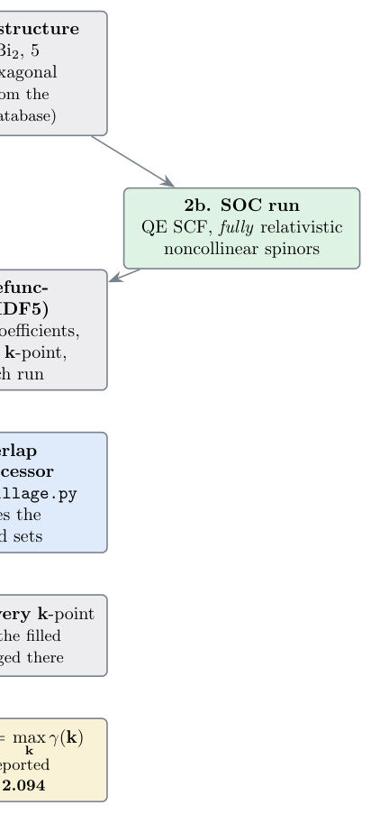
<figcaption class="paper-figure-caption"><b>Fig 1.</b> Figure 1: Workflow of the spillage computation.</figcaption>
</figure>
</div>
<p><strong>Summary.</strong> This work details a computational methodology to calculate 'spin-orbit spillage,' a metric used to predict topological character in materials. By comparing DFT calculations performed with and without SOC using Quantum ESPRESSO, the authors quantify the change in occupied electronic states. The resulting workflow provides a reliable, code-specific method for assessing topological properties in crystalline solids.</p>
<p><strong>Why it may be interesting.</strong> While the core physics is solid-state band theory, the rigorous, reproducible computational workflow developed for calculating a topological invariant (spillage) using established codes like QE is highly valuable for theoretical condensed matter research.</p>
<details>
<summary>Detailed structure</summary>
<p><strong>Main problem.</strong> The paper calculates the 'spin-orbit spillage,' a quantitative measure derived from Density Functional Theory (DFT) that estimates the likelihood of a material possessing topological electronic character.</p>
<p><strong>Main result.</strong> The authors successfully applied their Quantum ESPRESSO (QE) workflow to calculate the spillage for $  ext{BaMg}_2 ext{Bi}_2$, yielding a result ($2.094$) that agrees within $0.9\%$ of published values.</p>
<p><strong>Method.</strong> The calculation involves performing two separate DFT runs—one with and one without Spin-Orbit Coupling (SOC)—and then analyzing the overlap between the occupied electronic wavefunctions from both calculations.</p>
<p><strong>Model / system.</strong> The study uses DFT within a plane-wave basis set framework, applied to crystalline solids like $    ext{BaMg}_2 ext{Bi}_2$. The core physics involves comparing electronic bands calculated under both SOC (fully relativistic) and non-SOC (scalar-relativistic) approximations.</p>
<p><strong>Key observables.</strong> Spin-orbit spillage ($\eta = \max_{\mathbf{k}} \gamma(\mathbf{k})$), the overlap integral $\gamma(\mathbf{k})$, and the electronic band gap (both with and without SOC).</p>
<p><strong>Important parameters / regimes.</strong> Plane-wave cutoffs ($   ext{ecut}<em ext_rho="ext{rho">{ ext{wfc}}=70    ext{ Ry}$, $    ext{ecut}</em>$), Monkhorst–Pack k-point meshes (e.g., $6	imes6	imes4$), and the pseudopotential type (Norm-Conserving).}}=280   ext{ Ry</p>
<p><strong>Assumptions / limitations.</strong> The calculation assumes that the spillage metric is robustly defined by the overlap of occupied states between the SOC and non-SOC wavefunctions, and that the use of norm-conserving pseudopotentials allows for a simple coefficient dot product for the overlap.</p>
<p><strong>Figures summary.</strong> Figure 1 illustrates the complete computational workflow: from crystal structure input through two separate DFT runs (non-SOC and SOC) to the final wavefunction overlap analysis yielding the maximum spillage value.</p>
<p><strong>Paper structure.</strong> The paper details the theoretical definition of spillage, outlines the necessary computational workflow using QE (requiring two separate SCF calculations), describes the specific implementation details (pseudopotentials, basis sets, k-point sampling), and presents comparative results against established literature values.</p>
</details>
<details>
<summary>Abstract</summary>
<p>This work describes the calculation of spin-orbit spillage from a crystal structure. Spin-orbit spillage provides a measure of the likelihood that a material has topological character. The spillage also provides the reference quantity for the machine-learning classifier of Choudhary et al., which predicts whether the spillage exceeds a specified threshold rather than the calculation of its numerical value directly. The complete computation workflow was applied to the insulating compound BaMg2Bi2, yielding a spillage of 2.094 compared with the published VASP spillage of 2.075, corresponding to a difference of 0.9%. The calculation is described in terms of two Quantum ESPRESSO (QE) calculations of spillage performed with and without spin-orbit coupling, the role of relativistic pseudopotentials, and the subsequent wavefunction-overlap analysis. The limitations of the same calculation procedure for semimetals are also examined.</p>
</details>
<p><sub><a href="#top">↑ back to top</a></sub></p>

<p><a id="paper-2609.05126"></a></p>
<h3 id="coarse-graining-hidden-representations-unsupervised-neuron-selection-via-mapping-entropy"><a href="http://arxiv.org/abs/2609.05126v1">Coarse-Graining Hidden Representations: Unsupervised Neuron Selection via Mapping Entropy</a></h3>
<p><strong>Authors:</strong> Margherita Mele, Andrea Castagna, Roberto Menichetti, Raffaello Potestio, Alessandro Ingrosso<br>
<strong>Type:</strong> theory · <strong>Category:</strong> disordered systems and neural networks · <strong>PDF:</strong> <a href="https://arxiv.org/pdf/2609.05126v1">https://arxiv.org/pdf/2609.05126v1</a><br>
<strong>Analysis basis:</strong> full PDF text, analyzed in chunks</p>
<div class="figure-strip-hint">↔ Scroll figures horizontally</div>
<div class="paper-figures-scroll">
<figure class="paper-figure-card">
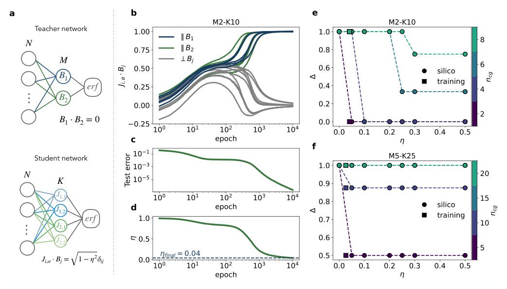
<figcaption class="paper-figure-caption"><b>Fig 1.</b> FIG. 1. TS system and ME analysis of hidden-layer representations. (a) Schematic representation of the teacher and student networks. The teacher has M hidden units with orthogonal first-layer weights Bi, while the student has K &gt; M hidden units labelled by (i, α). In the controlled construction, the student weights satisfy Ji,α·Bj = p</figcaption>
</figure>
<figure class="paper-figure-card">
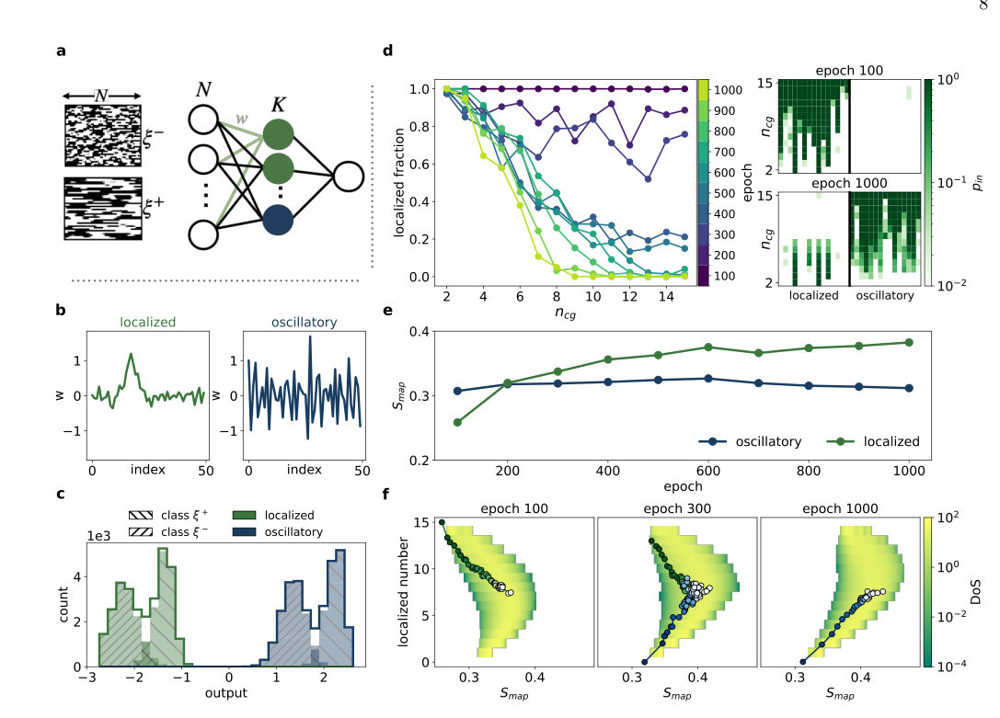
<figcaption class="paper-figure-caption"><b>Fig 2.</b> FIG. 2. NLGP system and ME analysis of hidden-layer representations. (a) Schematic of the classification task and network architecture. Input patterns from the two classes, characterised by different correlation lengths, are shown alongside the one- hidden-layer network with K = 30 neurons. (b) Representative examples of hidden neurons after training: a localised neuron (left), with weights concentrated on a subset of input coordinates, and an oscillatory neuron (right), with extended alternating- sign structure. (c) Distribution of the network output evaluated using only localised neurons (green) or only oscillatory neurons (blue), compared across the two classes (hatched histograms). (d)...</figcaption>
</figure>
<figure class="paper-figure-card">
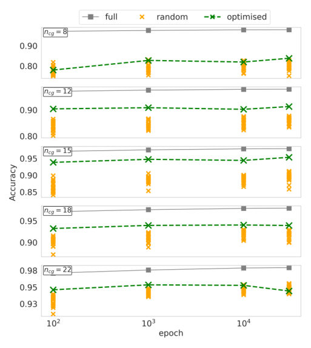
<figcaption class="paper-figure-caption"><b>Fig 3.</b> FIG. 3. NLGP reduced-network performance at different training epochs. Classification accuracy as a function of the number of retained neurons ncg. For each ncg, the green mark- ers denote the accuracy of the reduced network obtained from the ME-selected subset, the orange markers the accuracies ob- tained from random subsets of the same size, and the dashed grey line the accuracy of the full network. After pruning, the output bias is re-optimised while keeping the hidden-layer pa- rameters fixed. Note that the y axes do not start from zero.</figcaption>
</figure>
<figure class="paper-figure-card">
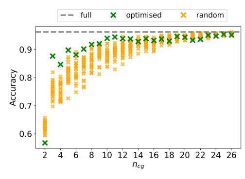
<figcaption class="paper-figure-caption"><b>Fig 4.</b> FIG. 4. Reduced-network performance for the MNIST bi- nary classification task (1 vs 7) with data augmentation by random translations. Classification accuracy as a function of the number of retained neurons ncg. For each ncg, the green markers denote the accuracy of the reduced network obtained from the ME-selected subset, the orange markers the accura- cies obtained from random subsets of the same size, and the dashed grey line the accuracy of the full network. Note that the y axes do not start from zero.</figcaption>
</figure>
</div>
<p><strong>Summary.</strong> This work proposes using Mapping Entropy (ME) to perform unsupervised pruning of overparameterized neural networks by identifying the most statistically informative subset of hidden neurons. By minimizing ME, the authors quantify the loss of discriminatory power upon compression. The method demonstrates that this purely statistical criterion effectively guides the selection of functionally relevant units, providing a powerful tool for understanding network redundancy.</p>
<p><strong>Why it may be interesting.</strong> The methodology of using information-theoretic measures like ME to characterize the essential degrees of freedom in a complex, high-dimensional system mirrors approaches used in statistical mechanics for coarse-graining physical models.</p>
<details>
<summary>Detailed structure</summary>
<p><strong>Main problem.</strong> The paper addresses the challenge of identifying which hidden units in an overparameterized neural network are functionally essential without relying on labeled data or gradient information.</p>
<p><strong>Main result.</strong> Minimizing the Mapping Entropy (ME) provides a fully unsupervised criterion that successfully selects informative subsets of neurons, outperforming random selections, especially under strong network compression.</p>
<p><strong>Method.</strong> Neuron selection is framed as coarse-graining the hidden layer, quantified by minimizing the Mapping Entropy (ME), which measures the loss of discriminatory power when discarding units.</p>
<p><strong>Model / system.</strong> The study uses overparameterized neural networks, analyzing their hidden activation statistics. Specific tests include teacher-student networks and non-linear Gaussian process tasks.</p>
<p><strong>Key observables.</strong> Mapping Entropy (ME), classification accuracy, and the structural descriptors like the Inverse Participation Ratio (IPR).</p>
<p><strong>Important parameters / regimes.</strong> The compression ratio (number of retained neurons, $n_{cg}$), and the mismatch parameter ($\eta$) in the teacher-student setup.</p>
<p><strong>Assumptions / limitations.</strong> The analysis relies on binarizing hidden activations ($  ext{sign}(h_{\mu,i})$) and assumes that the statistical structure of hidden configurations is sufficient to determine functional importance.</p>
<p><strong>Figures summary.</strong> Figure 4 compares the classification accuracy of ME-selected subnetworks against random subsets and the full network for MNIST classification, showing superior performance for ME selection under strong compression.</p>
<p><strong>Paper structure.</strong> The paper introduces the problem of unsupervised neuron selection via coarse-graining, defines the ME as the key diagnostic, and validates this criterion across multiple controlled tasks (TS networks, NLGP, MNIST).</p>
</details>
<details>
<summary>Abstract</summary>
<p>Overparameterized neural networks carry far more hidden units than a task nominally requires, raising the question of which neurons are essential and whether that distinction is legible in the representation itself, without labels or gradients. We cast neuron selection as the problem of coarse-graining the hidden layer by retaining a subset of its neurons, and score each putative selection by the mapping entropy (ME). This quantity measures the loss of discriminatory power inherent in discarding part of the network neurons, and the selection that minimises the ME is taken as particularly informative. This criterion is fully unsupervised, in that it depends only on hidden-activation statistics. In teacher-student networks, ME optimisation recovers the minimal teacher-consistent representation and retains extra units in proportion to the hidden layer's residual variability; in a non-linear Gaussian process task, it selects coherent functional-class mappings whose preferred class shifts across training. On this task and on translation-augmented MNIST, ME-selected subnetworks outperform random subsets of equal size, most clearly under strong compression - linking configurational distinguishability to predictive performance.</p>
</details>
<p><sub><a href="#top">↑ back to top</a></sub></p>

<p><a id="paper-2609.05153"></a></p>
<h3 id="fanout-complexity-of-symmetric-boolean-functions-in-math683math"><a href="http://arxiv.org/abs/2609.05153v1">Fanout Complexity of Symmetric Boolean Functions in $\mathsf{QAC}^0$</a></h3>
<p><strong>Authors:</strong> Boyan Xu, Lvzhou Li<br>
<strong>Type:</strong> theory · <strong>Category:</strong> quantum information and computing · <strong>PDF:</strong> <a href="https://arxiv.org/pdf/2609.05153v1">https://arxiv.org/pdf/2609.05153v1</a><br>
<strong>Analysis basis:</strong> full PDF text, analyzed in chunks</p>
<div class="figure-strip-hint">↔ Scroll figures horizontally</div>
<div class="paper-figures-scroll">
<figure class="paper-figure-card">
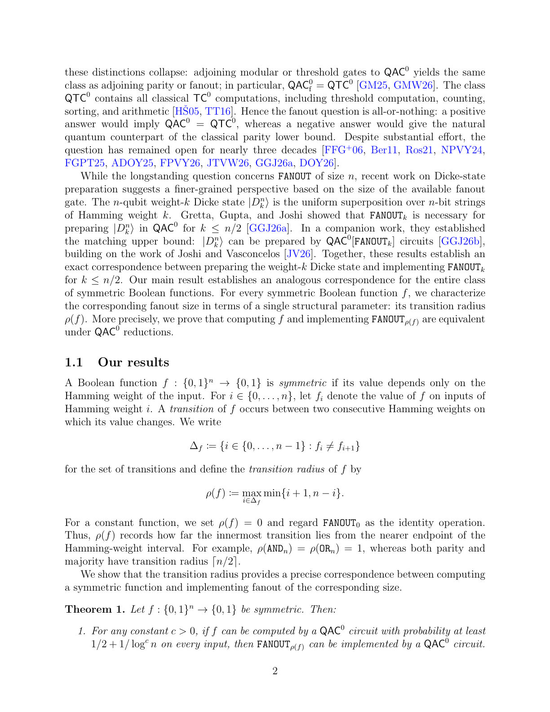
<figcaption class="paper-figure-caption"><b>Fig 1.</b> Low-resolution page preview, page 2</figcaption>
</figure>
<figure class="paper-figure-card">
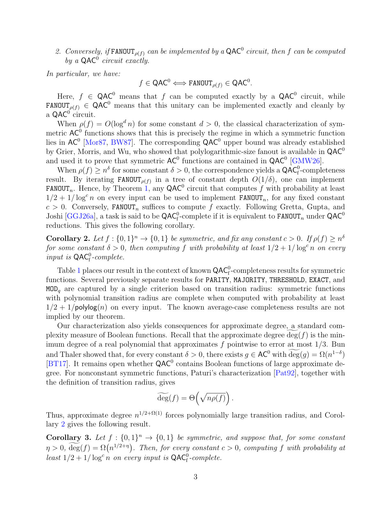
<figcaption class="paper-figure-caption"><b>Fig 2.</b> Low-resolution page preview, page 3</figcaption>
</figure>
<figure class="paper-figure-card">
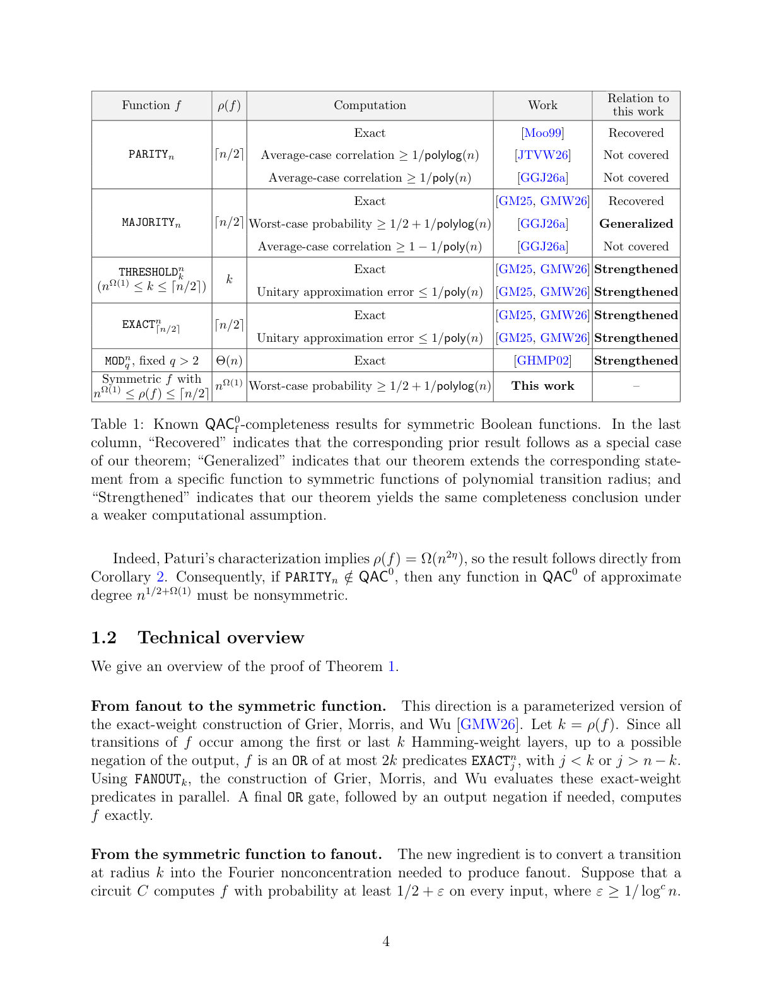
<figcaption class="paper-figure-caption"><b>Fig 3.</b> Low-resolution page preview, page 4</figcaption>
</figure>
<figure class="paper-figure-card">
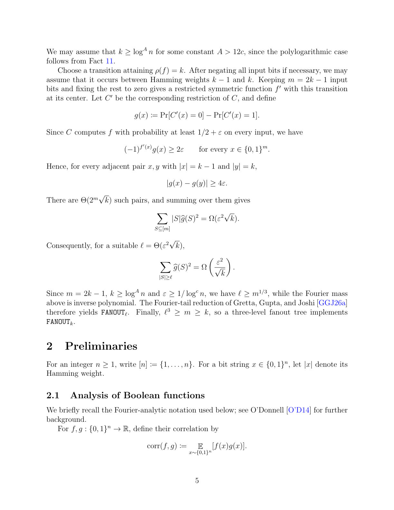
<figcaption class="paper-figure-caption"><b>Fig 4.</b> Low-resolution page preview, page 5</figcaption>
</figure>
<figure class="paper-figure-card">
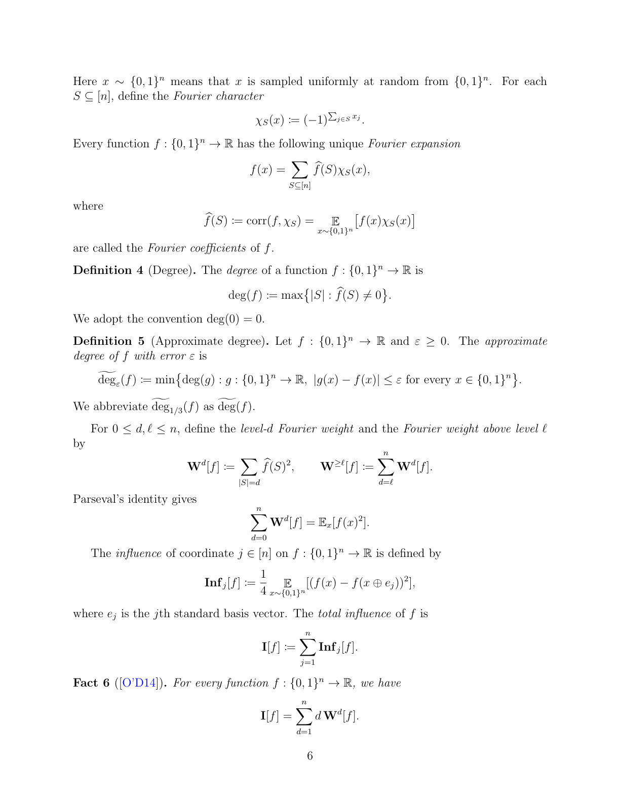
<figcaption class="paper-figure-caption"><b>Fig 5.</b> Low-resolution page preview, page 6</figcaption>
</figure>
</div>
<p><strong>Summary.</strong> This paper characterizes the computational power of quantum circuits ($\mathsf{QAC}^0$) for symmetric Boolean functions by relating it to the fanout complexity of the $\mathsf{FANOUT}$ function. The core result shows that computing a function $f$ is equivalent to implementing $\mathsf{FANOUT}_{
ho(f)}$, where $
ho(f)$ is the function's transition radius. This provides a powerful tool for classifying the complexity of quantum computations based on structural properties of the function.</p>
<p><strong>Why it may be interesting.</strong> This work provides a deep structural characterization of computational power in quantum circuits by linking it directly to a fundamental graph/combinatorial parameter ($
ho(f)$), which is highly relevant for understanding the limitations of quantum computation models.</p>
<details>
<summary>Detailed structure</summary>
<p><strong>Main problem.</strong> The paper aims to characterize the minimum fanout size required to compute an arbitrary symmetric Boolean function within the quantum circuit complexity class $\mathsf{QAC}^0$.</p>
<p><strong>Main result.</strong> The computation of a symmetric function $f$ is equivalent to implementing the $\mathsf{FANOUT}_{
ho(f)}$ operation under $\mathsf{QAC}^0$ reductions, where $
ho(f)$ is the function's transition radius.</p>
<p><strong>Method.</strong> The authors use Fourier analysis and establish two key reductions: one showing $\mathsf{FANOUT}_{
ho(f)}$ suffices for $f$, and another showing $f$ implies $\mathsf{FANOUT}_{
ho(f)}$ using a Fourier-tail reduction.</p>
<p><strong>Model / system.</strong> The analysis is conducted within the $\mathsf{QAC}^0$ model, which uses single-qubit gates and multi-controlled Toffoli gates. The complexity is measured by the required fanout size, $\mathsf{FANOUT}_n$.</p>
<p><strong>Key observables.</strong> The transition radius $
ho(f)$ is the key structural parameter characterizing the required fanout size.</p>
<p><strong>Important parameters / regimes.</strong> The required fanout size $
ho(f)$ is compared against polynomial bounds like $n^\delta$ and the approximate degree $  ext{gdeg}(f)$.</p>
<p><strong>Assumptions / limitations.</strong> The results rely on specific facts regarding Fourier analysis and require the computation probability to be sufficiently high (e.g., $\ge 1/2 + 1/\log_c n$) for the completeness results.</p>
<p><strong>Figures summary.</strong> Table 1 summarizes known $\mathsf{QAC}^0_{\mathsf{FANOUT}_n}$-completeness results for various functions, showing how the new theorem generalizes prior findings based on $
ho(f)$.</p>
<p><strong>Paper structure.</strong> The paper builds by first establishing the equivalence between computing $f$ and implementing $\mathsf{FANOUT}_{
ho(f)}$ (Theorem 1). It then derives completeness results by showing that if $
ho(f)$ is large, the function is $\mathsf{QAC}^0_{\mathsf{FANOUT}_n}$-complete, connecting this to the function's approximate degree.</p>
</details>
<details>
<summary>Abstract</summary>
<p>Whether $\mathsf{QAC}^0$ can compute $\mathtt{PARITY}_n$ remains open. Computing $\mathtt{PARITY}_n$ is equivalent to implementing $\mathtt{FANOUT}_n$ under $\mathsf{QAC}^0$ reductions. This raises a more general question: for an arbitrary symmetric Boolean function $f:\{0,1\}^n\to\{0,1\}$, what fanout size is necessary and sufficient for computing $f$ in $\mathsf{QAC}^0$? We show that the answer is exactly the transition radius $ρ(f)$: computing $f$ and implementing $\mathtt{FANOUT}_{ρ(f)}$ are equivalent under $\mathsf{QAC}^0$ reductions. In particular, if $ρ(f)\ge n^δ$ for some constant $δ>0$, then computing $f$ is $\mathsf{QAC}^0_{\mathrm{f}}$-complete. Combined with Paturi's theorem, our characterization implies that if $\mathtt{PARITY}_n \notin \mathsf{QAC}^0$, then any Boolean function in $\mathsf{QAC}^0$ of approximate degree $n^{1/2+Ω(1)}$ must be nonsymmetric.</p>
</details>
<p><sub><a href="#top">↑ back to top</a></sub></p>

<p><a id="paper-2609.04532"></a></p>
<h3 id="layer-architecture-shapes-electronic-magnetic-and-lattice-interactions-in-ruddlesden-popper-nickelates"><a href="http://arxiv.org/abs/2609.04532v1">Layer Architecture Shapes Electronic, Magnetic, and Lattice Interactions in Ruddlesden-Popper Nickelates</a></h3>
<p><strong>Authors:</strong> W. He, X. Guo, X. Luo, J. Thomas, J. Sears, Sophia F. R. TenHuisen, Ziqiang Guan, Xinglong Chen, D. A. Dahlbom, B. Zager, J. Pelliciari, Yi-Feng Zhao, H. LaBollita, Hong Zheng, M. K. Lajer, J. F. Mitchell, V. Bisogni, A. S. Botana, M. Mitrano, S. Johnston, M. P. M. Dean<br>
<strong>Type:</strong> both · <strong>Category:</strong> strongly correlated electrons · <strong>PDF:</strong> <a href="https://arxiv.org/pdf/2609.04532v1">https://arxiv.org/pdf/2609.04532v1</a><br>
<strong>Analysis basis:</strong> full PDF text, analyzed in chunks</p>
<div class="figure-strip-hint">↔ Scroll figures horizontally</div>
<div class="paper-figures-scroll">
<figure class="paper-figure-card">
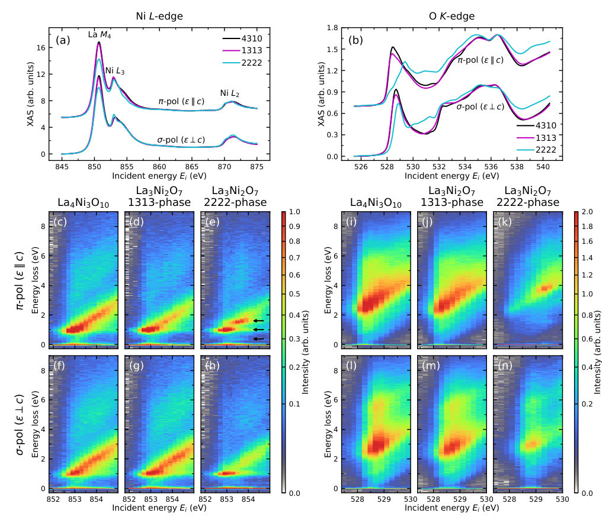
<figcaption class="paper-figure-caption"><b>Fig 1.</b> FIG. 1. Electronic structure of La4Ni3O10 and the two polymorphs of La3Ni2O7. (a),(b) XAS spectra measured in total fluorescence yield mode for (a) the Ni L-edge and (b) the O K-edge, respectively. (c)–(n), RIXS intensity maps as a function of incident x-ray energy across (c)–(h) the Ni L3 and (i)–(n) the O K resonances, respectively. The Ni L-edge data were taken at 80 K with an incident angle of θ = 10◦and scattering angle of 2Θ = 150◦in the (H0L) scattering plane, while the O K-edge data were taken at 22 K with an incident angle of θ = 15◦and scattering angle of 2Θ = 150◦in the (HHL) scattering plane. Therefore, the polarization of σ(π)-polarized incident x-rays is perpendicular...</figcaption>
</figure>
<figure class="paper-figure-card">
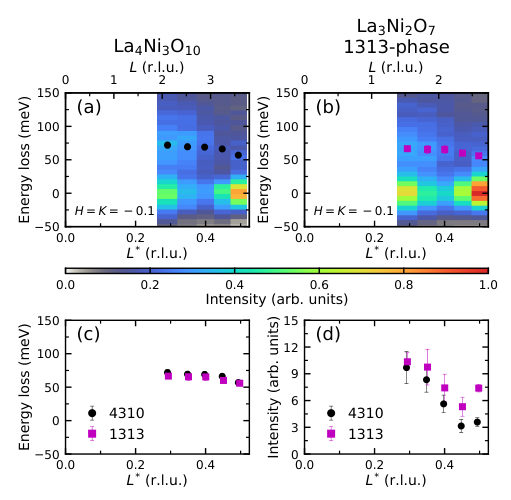
<figcaption class="paper-figure-caption"><b>Fig 2.</b> FIG. 3. Out-of-plane magnetic-excitation dispersion of La4Ni3O10 and LNO-1313. (a),(b) Ni L3-edge RIXS inten- sity maps as a function of the out-of-plane momentum trans- fer with a focus on the low-energy magnetic excitations. The overlaid black dots (for La4Ni3O10) and magenta squares (for LNO-1313) are extracted magnetic-excitation energies from the fits described in Supplemental Material Sec. S6. Both the incident angle θ and scattering angle 2Θ were adjusted to ensure a fixed q∥= (−0.1, −0.1) r.l.u. The coordinate L is based on the c-axis lattice constant, whereas L∗= Ld/c is based on the interlayer separation of NiO2 planes d ≈3.9 ˚A. (c),(d) Comparison of the (c) fitted...</figcaption>
</figure>
<figure class="paper-figure-card">
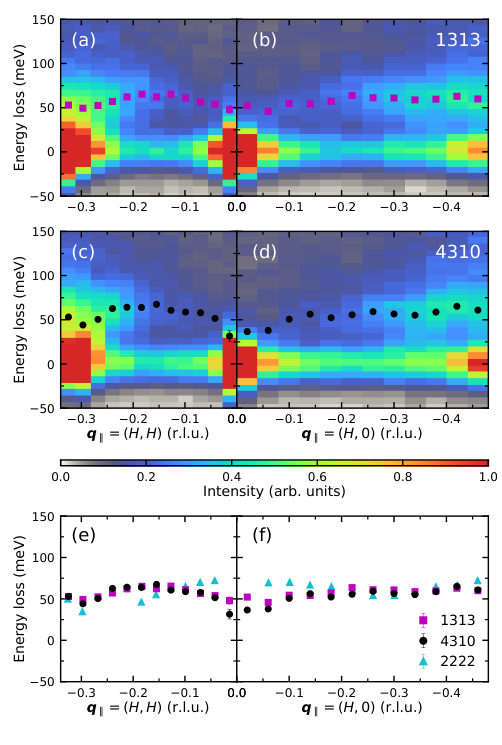
<figcaption class="paper-figure-caption"><b>Fig 3.</b> FIG. 2. In-plane magnetic-excitation dispersion of La4Ni3O10 and LNO-1313. (a)–(d) Ni L3-edge RIXS intensity maps as a function of the in-plane momentum transfer q∥along the (a),(c) (H, H) and (b),(d) (H, 0) directions, respectively, with a focus on the low-energy magnetic excitations. The overlaid black dots (for La4Ni3O10) and magenta squares (for LNO- 1313) are extracted magnetic-excitation energies from the fits described in Supplemental Material Sec. S6. (e),(f) Compar- ison of the fitted magnetic-excitation dispersion in these two materials. All the measurements were taken at T = 80 K using π-polarized incident x-rays at an incident energy of ∼852.9 eV to maximize the...</figcaption>
</figure>
<figure class="paper-figure-card">
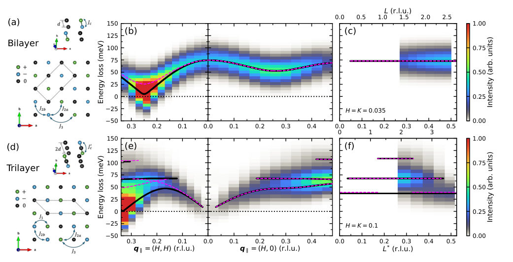
<figcaption class="paper-figure-caption"><b>Fig 4.</b> FIG. 4. Simulated magnetic-excitation spectra for a bilayer model of LNO-2222 and a trilayer model of La4Ni3O10 and LNO- 1313. (a),(d) Schematic illustration of the magnetic structures and relevant exchange interactions for the bilayer and trilayer models, respectively. The green, blue, and black spheres represent spin-up, spin-down, and spinless Ni sites, respectively. For each panel, the bottom part displays one representative layer in the ab plane and the top part displays the structure along the out-of-plane c axis. Dotted lines illustrate the in-plane magnetic unit cells. (b),(e), Calculated magnetic-excitation spectra projected onto the in-plane high-symmetry (H, H) and (H, 0)...</figcaption>
</figure>
<figure class="paper-figure-card">
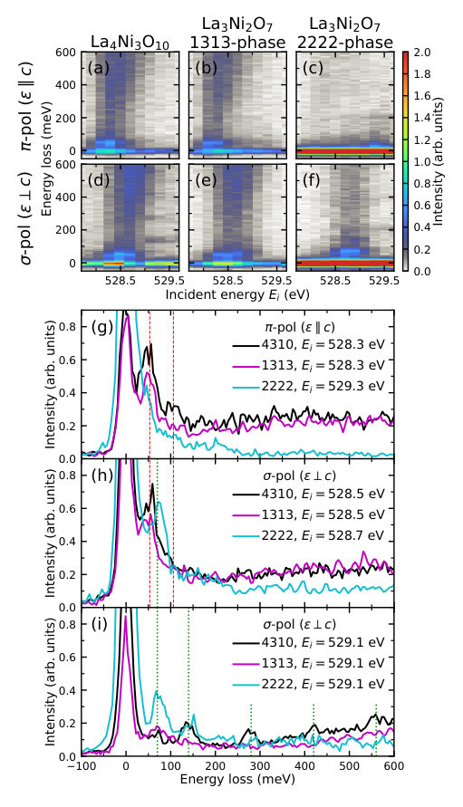
<figcaption class="paper-figure-caption"><b>Fig 5.</b> FIG. 5. Comparison of phonons in La4Ni3O10 and the two polymorphs of La3Ni2O7. (a)–(f) O K-edge RIXS intensity maps as a function of incident x-ray energy. These maps are zoomed-in views of the data in Figs. 1(i)–1(n), emphasizing the low-energy phonon features. Panels (g)–(i) display sev- eral representative RIXS spectra with red and green vertical lines marking multiples of 53 and 70 meV, respectively, based on La4Ni3O10 and LNO-1313. The data were taken at 22 K with an incident angle of θ = 15◦and scattering angle of 2Θ = 150◦in the (HHL) scattering plane. The polarization of σ(π)-polarized incident x-rays is perpendicular (approxi- mately parallel) to the sample c-axis.</figcaption>
</figure>
</div>
<p><strong>Summary.</strong> This work uses RIXS spectroscopy to compare the electronic and magnetic properties of different layer structures in nickelates. By comparing polymorphs, the authors find that layer architecture dictates the nature of magnetic interactions. They complement this with advanced spin-wave theory, providing critical experimental constraints for future theoretical models of superconductivity in these materials.</p>
<p><strong>Why it may be interesting.</strong> The application of advanced quantum many-body techniques, such as the entangled-unit formalism for spin waves, to model correlated electron systems in layered materials provides a rich playground for theoretical physicists studying quantum magnetism and strongly correlated phenomena.</p>
<details>
<summary>Detailed structure</summary>
<p><strong>Main problem.</strong> The study investigates how the specific layer architecture (polymorph) within Ruddlesden-Popper nickelates dictates the electronic, magnetic, and lattice interactions crucial for superconductivity.</p>
<p><strong>Main result.</strong> The alternating monolayer-trilayer and related trilayer compounds share similar excitation spectra compared to the bilayer structure, which exhibits distinct features, suggesting layer structure strongly controls low-energy physics.</p>
<p><strong>Method.</strong> The research combines detailed experimental measurements using Resonant Inelastic X-ray Scattering (RIXS) with theoretical modeling employing an entangled-dimer spin-wave formalism.</p>
<p><strong>Model / system.</strong> The system is the Ruddlesden-Popper nickelates, specifically comparing $    ext{La}<em 10>3   ext{Ni}_2   ext{O}_7$ polymorphs (LNO-1313 and LNO-2222) and $  ext{La}_4   ext{Ni}_3   ext{O}</em>=1$ Ni moments.}$. The magnetic excitations are modeled using an entangled-unit formalism treating $ ext{S</p>
<p><strong>Key observables.</strong> Electronic, magnetic, and lattice excitations measured via Ni $    ext{L}_3$-edge and O $  ext{K}$-edge RIXS; orbital polarization; spin fluctuations; and electron-phonon coupling (EPC).</p>
<p><strong>Important parameters / regimes.</strong> The effective coordinate $L^* = L_d/c$; magnetic gaps constrained to $\sim 5 	ext{ meV}$ and $25 	ext{ meV}$ for $    ext{LNO-2222}$.</p>
<p><strong>Assumptions / limitations.</strong> For the magnetic modeling, the system state is approximated using an entangled-dimer scenario, and the analysis often excludes elastic-line regions due to surface sensitivity.</p>
<p><strong>Figures summary.</strong> Figures compare XAS/RIXS spectra across the three polymorphs, showing differences in peak profiles. Simulated magnetic-excitation dispersion for $ ext{LNO-2222}$ is shown as an incoherent average of two orthogonal stripe domains.</p>
<p><strong>Paper structure.</strong> The paper first establishes the problem by comparing the polymorphs using RIXS. It then details the spectroscopic findings (XAS/RIXS) that reveal differences in orbital character and excitations. Finally, it applies advanced modeling (entangled-dimer spin-wave theory) to fit the observed magnetic excitation spectra and constrain exchange parameters.</p>
</details>
<details>
<summary>Abstract</summary>
<p>The discovery of superconductivity in Ruddlesden-Popper nickelates has raised a central question: how does layer architecture shape the electronic, magnetic, and lattice interactions relevant to pairing? Here, we report a detailed comparative study of the two polymorphs of La3Ni2O7--the alternating monolayer-trilayer (LNO-1313) and bilayer (LNO-2222) structures--and the related trilayer compound La4Ni3O10, using both Ni L3- and O K-edge RIXS. We find that LNO-1313 and La4Ni3O10 share strikingly similar electronic, magnetic, and lattice excitations, whereas bilayer LNO-2222 exhibits distinct features. Compared to LNO-2222, LNO-1313 and La4Ni3O10 have weaker orbital polarization, enhanced 3d8L character, a reduced out-of-plane magnetic-exchange scale, and stronger EPC. Within an effective local-moment framework, an entangled-dimer scenario provides a natural description of the spin excitations generated by strong antiferromagnetic interlayer coupling. Its advantage over conventional spin-wave theory is clearest in bilayer LNO-2222, where the interlayer coupling dominates the intralayer interactions. These findings provide critical experimental constraints for future theoretical models for the low-energy physics relevant to superconductivity in these layered nickelates.</p>
</details>
<p><sub><a href="#top">↑ back to top</a></sub></p>

<p><a id="paper-2609.05250"></a></p>
<h3 id="memory-optimal-sequential-synthesis-of-multimode-gaussian-transformations"><a href="http://arxiv.org/abs/2609.05250v1">Memory-Optimal Sequential Synthesis of Multimode Gaussian Transformations</a></h3>
<p><strong>Authors:</strong> Fucheng Guo, Frank Mueller, Yuan Liu<br>
<strong>Type:</strong> theory · <strong>Category:</strong> quantum information and computing · <strong>PDF:</strong> <a href="https://arxiv.org/pdf/2609.05250v1">https://arxiv.org/pdf/2609.05250v1</a><br>
<strong>Analysis basis:</strong> full PDF text, analyzed in chunks</p>
<div class="figure-strip-hint">↔ Scroll figures horizontally</div>
<div class="paper-figures-scroll">
<figure class="paper-figure-card">
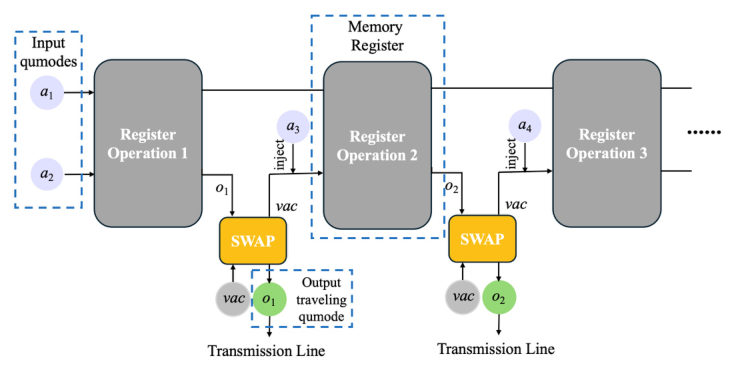
<figcaption class="paper-figure-caption"><b>Fig 1.</b> FIG. 1. Sequential implementation of a multimode Gaussian transformation S using a reusable memory register. The memory register consists of stationary qumodes on which Gaussian operations can be performed. Time proceeds from left to right. The initial input qumodes are first loaded into the register. At each step, an in-register Gaussian operation maps the next output qumode ok onto one memory qumode while retaining the information required for later outputs in the remaining memory qumodes. The state of ok is then transferred to a vacuum traveling qumode through a beam-splitter full swap (θ = π, labeled “SWAP”) and released into a transmission line. The swap leaves the corresponding memory...</figcaption>
</figure>
<figure class="paper-figure-card">
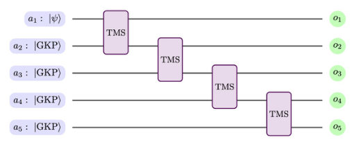
<figcaption class="paper-figure-caption"><b>Fig 2.</b> FIG. 2. Five-qumode chain encoder. The input qumode a1 carries the data state |ψ⟩, while a2, . . . , a5 are GKP an- cilla qumodes. Consecutive qumodes are coupled by nearest- neighbor TMS gates with squeezing parameter r. The corre- sponding output qumodes are labeled o1, . . . , o5.</figcaption>
</figure>
<figure class="paper-figure-card">
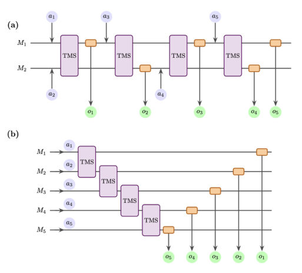
<figcaption class="paper-figure-caption"><b>Fig 3.</b> FIG. 3. Sequential emission of the N = 5 chain code in two different orders, generated by Algorithm 1. Horizontal lines denote memory qumodes M1, M2, . . . , vertical arrows denote input injections, and the orange blocks denote π full swaps to traveling qumodes. (a) Forward order. Two memory qumodes are sufficient, giving nmem = 2. The first step injects a1 and a2; each subsequent step injects the next input into the memory qumode freed by the previous emission, applies one TMS gate, and emits the next output. The final step emits o5 without an additional gate. (b) Reverse order. Since o5 depends on all inputs, all five inputs and all four TMS gates are required before the first emission....</figcaption>
</figure>
<figure class="paper-figure-card">
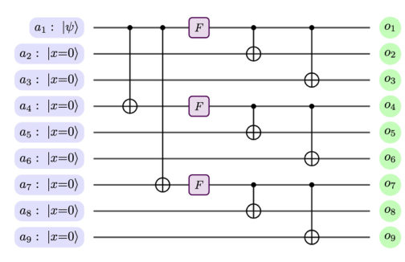
<figcaption class="paper-figure-caption"><b>Fig 4.</b> FIG. 4. Encoding circuit of the nine-qumode analog Shor code. The input qumode a1 carries the data state |ψ⟩, while a2, . . . , a9 are initialized in the position eigenstate |x = 0⟩. The circuit consists of Fourier gates F and SUM gates, and the corresponding output qumodes are labeled o1, . . . , o9.</figcaption>
</figure>
<figure class="paper-figure-card">
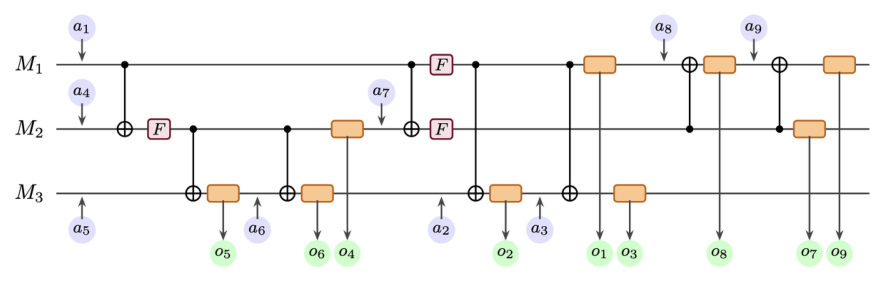
<figcaption class="paper-figure-caption"><b>Fig 5.</b> FIG. 5. Emission circuit for the analog Shor code in the greedy emission order of Eq. (23), generated by Algorithm 1. The circuit proceeds from left to right. The horizontal lines represent the three memory qumodes M1, M2, M3, and the vertical arrows labeled a1, . . . , a9 indicate input injections. A SUM gate is represented by a control dot and a target ⊕, while F denotes the Fourier gate. Each orange block represents a π full swap between a memory qumode and a vacuum traveling qumode. The traveling qumode is then emitted as the corresponding output ok, indicated by a downward arrow. In the circuit shown, the emission operations are distributed among different memory qumodes. Nevertheless,...</figcaption>
</figure>
</div>
<p><strong>Summary.</strong> This work tackles the resource challenge in modular quantum computing by finding the minimum memory required to execute a desired Gaussian transformation. It derives this minimum memory cost from the rank of submatrices of the transformation matrix and proposes a concrete, memory-optimal sequential protocol to achieve it. This offers a resource-efficient blueprint for intermodule communication in continuous-variable quantum computation.</p>
<p><strong>Why it may be interesting.</strong> It provides a rigorous, resource-efficient framework for understanding and implementing complex quantum operations (Gaussian transformations) in physically constrained, modular quantum computing hardware.</p>
<details>
<summary>Detailed structure</summary>
<p><strong>Main problem.</strong> The paper determines the minimum memory cost and constructs an explicit sequential protocol for realizing a prescribed multimode Gaussian transformation on $N$ qumodes.</p>
<p><strong>Main result.</strong> The minimum memory cost is determined by a rank-based counting rule, $n_{	ext{mem}}(S) = \max_{1 \le k \le N} \{|P_k| - k + 1\}$, and an efficient algorithm achieves this minimum.</p>
<p><strong>Method.</strong> The authors derive the minimum memory requirement using symplectic rank analysis and develop an iterative, memory-optimal synthesis algorithm based on matrix updates.</p>
<p><strong>Model / system.</strong> The system models modular quantum computing architectures where Gaussian transformations are implemented by sequentially emitting output qumodes ($o_k$) from a reusable set of stationary memory qumodes via beam-splitter interactions.</p>
<p><strong>Key observables.</strong> Minimum memory cost ($n_{	ext{mem}}(S)$), which is the maximum rank of specific submatrices of the symplectic transformation matrix $S$.</p>
<p><strong>Important parameters / regimes.</strong> The symplectic matrix $S \in Sp(2N, \mathbb{R})$, the number of qumodes $N$, and the dimensionality $D$ for lattice support.</p>
<p><strong>Assumptions / limitations.</strong> The beam-splitter interaction is assumed to completely transfer the state and leave the memory qumode in the vacuum state; the analysis focuses on exact implementations.</p>
<p><strong>Figures summary.</strong> Figure 1 illustrates the sequential implementation process: input loading, in-register operation mapping, BS full swap to vacuum, and memory qumode reset/reuse.</p>
<p><strong>Paper structure.</strong> The paper establishes the physical model, derives the theoretical lower bound for memory cost using rank analysis, and then presents an explicit, memory-optimal synthesis algorithm (Algorithm 3) compared against heuristic methods.</p>
</details>
<details>
<summary>Abstract</summary>
<p>In modular quantum computing architectures, communication between hardware modules is mediated by traveling qumodes sent through transmission lines. Each output qumode interacts with the emitting module only once through a beam-splitter-type interaction and becomes inaccessible to that module after emission. Information required for subsequent outputs must therefore remain in long-lived memory qumodes. For a prescribed multimode Gaussian transformation on $N$ qumodes, this work determines the minimum memory cost for any given emission order, constructs an explicit sequential protocol attaining this minimum, and develops a greedy method for identifying memory-efficient emission orders. The transformation is represented by a symplectic matrix $S$, specified either directly or through a Gaussian gate sequence. The exact minimum memory cost is obtained from the ranks of submatrices of $S$ and further reduces to a support-based counting rule whose computational cost is linear in the size of the support data. When $S$ is specified directly, a matrix-based protocol attains the minimum memory cost. If instead $S$ is specified through a gate sequence, the original gates can be reused without additional synthesis, although the resulting memory usage need not be minimal. Gaussian transformations with local support on a $D$-dimensional cubic lattice can be realized sequentially with $O(N^{(D-1)/D})$ memory qumodes. The protocols also apply to non-Gaussian inputs, including GKP and cat states, and thereby provide an explicit, resource-efficient scheme for intermodule communication in modular architectures for universal continuous-variable quantum computation.</p>
</details>
<p><sub><a href="#top">↑ back to top</a></sub></p>

<p><a id="paper-2609.05201"></a></p>
<h3 id="optimal-inequalities-for-completely-bounded-polynomials-and-the-limitations-of-quantum-query-algorithms"><a href="http://arxiv.org/abs/2609.05201v1">Optimal inequalities for completely bounded polynomials and the limitations of quantum query algorithms</a></h3>
<p><strong>Authors:</strong> Francisco Escudero Gutiérrez, Miquel Saucedo, Carlos Palazuelos<br>
<strong>Type:</strong> theory · <strong>Category:</strong> quantum information and computing · <strong>PDF:</strong> <a href="https://arxiv.org/pdf/2609.05201v1">https://arxiv.org/pdf/2609.05201v1</a><br>
<strong>Analysis basis:</strong> full PDF text, analyzed in chunks</p>
<div class="figure-strip-hint">↔ Scroll figures horizontally</div>
<div class="paper-figures-scroll">
<figure class="paper-figure-card">
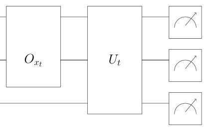
<figcaption class="paper-figure-caption"><b>Fig 1.</b> Figure 1: Quantum query algorithm that queries disjoint blocks of variables x1, . . . , xt.</figcaption>
</figure>
<figure class="paper-figure-card">
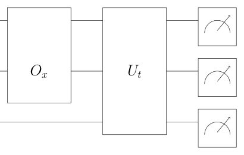
<figcaption class="paper-figure-caption"><b>Fig 2.</b> Figure 2: Standard quantum query algorithm.</figcaption>
</figure>
<figure class="paper-figure-card">
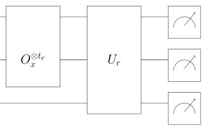
<figcaption class="paper-figure-caption"><b>Fig 3.</b> Figure 3: Quantum query algorithm with r −1 rounds of adaptivity.</figcaption>
</figure>
<figure class="paper-figure-card">
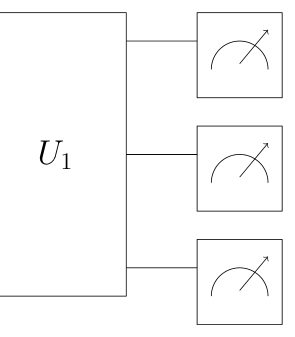
<figcaption class="paper-figure-caption"><b>Fig 4.</b> Figure 4: Non-adaptive quantum query algorithms.</figcaption>
</figure>
</div>
<p><strong>Summary.</strong> This paper uses advanced polynomial methods, particularly the completely bounded norm, to derive optimal functional inequalities that constrain the behavior of quantum query algorithms. By establishing tight bounds on root-influence and Fourier growth, the authors provide significant improvements in understanding the classical simulation limits of quantum computation. This work advances the theoretical understanding of quantum query complexity.</p>
<p><strong>Why it may be interesting.</strong> This work provides deep mathematical tools (like optimal functional inequalities) to quantify the separation between quantum and classical computational models, which is fundamental to understanding quantum advantage.</p>
<details>
<summary>Detailed structure</summary>
<p><strong>Main problem.</strong> The paper aims to establish rigorous mathematical limitations on the computational power of quantum query algorithms.</p>
<p><strong>Main result.</strong> The authors prove optimal functional inequalities involving completely bounded polynomials, leading to improved bounds for classical simulation and Fourier growth for quantum query algorithms.</p>
<p><strong>Method.</strong> The core method involves applying the polynomial method, specifically utilizing the completely bounded norm ($\|p\|_{cb}$) and Fourier analysis to characterize the acceptance probability of quantum circuits.</p>
<p><strong>Model / system.</strong> The focus is on quantum query algorithms, whose acceptance probability is modeled by a polynomial $p: \{-1, 1\}^n 	o \mathbb{R}$ of degree $2t$, where $t$ is the number of queries.</p>
<p><strong>Key observables.</strong> Completely bounded norm ($\|p\|_{cb}$), root-influence bounds ($    ext{Inf}_i[p]$), and the $\ell_1$ norm of Fourier coefficients ($\|\widehat p_{2t}\|_{\ell_1}$).</p>
<p><strong>Important parameters / regimes.</strong> The number of queries ($t$), the input dimension ($n$), and the degree of the polynomial ($2t$).</p>
<p><strong>Assumptions / limitations.</strong> The analysis relies on the polynomial method and the characterization of quantum query algorithms via completely bounded polynomials.</p>
<p><strong>Figures summary.</strong> Figure 1 illustrates a quantum query algorithm querying disjoint blocks of variables, while Figure 2 illustrates a standard quantum query algorithm querying the whole input repeatedly.</p>
<p><strong>Paper structure.</strong> The paper proceeds by proving optimal functional inequalities for completely bounded polynomials, first establishing a root-influence bound for block-multilinear polynomials, and then deriving a tight Fourier growth bound for general quantum query algorithms.</p>
</details>
<details>
<summary>Abstract</summary>
<p>We consider the problem of establishing limitations on the power of quantum query algorithms via the completely bounded polynomial method. In particular, we prove several optimal functional inequalities involving different notions of completely bounded polynomials. These inequalities lead to limiting theorems for the power of quantum query algorithms that improve on prior works.   1. An optimal root-influence bound for block-multilinear polynomials. Prior work showed that block-multilinear polynomials $p$ of degree $t$ satisfy a root-influence bound, $\|p\|_{\text{cb}}\geq \sum_i \sqrt{\mathrm{Inf}_i[p]}/t^2$, which is stronger than the bound appearing in the Aaronson-Ambainis conjecture. We find the optimal constant in that inequality: $\|p\|_{\text{cb}}\geq \sum_i \sqrt{\mathrm{Inf}_i[p]}/t$. Since the amplitudes of quantum algorithms that query disjoint blocks of inputs-such as $t$-fold forrelation- are block-multilinear polynomials with $\|p\|_{\text{cb}}\leq 1,$ our inequality shows that they satisfy $t\geq \sum_i\sqrt{\mathrm{Inf}_i[p]}$. We prove that this inequality yields both a more efficient classical simulation than prior results based on the Aaronson-Ambainis argument, and a qualitative improvement: all classical queries are nonadaptive.   2. Optimal Fourier growth of the highest level of quantum query algorithms. We show that for every polynomial $p$ defined on $\{-1,1\}^n$ of degree $2t$, the Fourier Growth at the level $2t,$ namely $\|\widehat p_{2t}\|_{\ell_1}$, satisfies $\|\widehat p_{2t}\|_{\ell_1}\leq (en/(2t-1))^{\frac{2t-1}{2}}\|p\|_{\text{cb}}$. This is optimal up to the factor $e$, as witnessed by $2t$-fold forrelation. As quantum query algorithms that make $t$ queries (to the whole input) satisfy $\|p\|_{\text{cb}}\leq 1$, this yields a Fourier growth bound for these algorithms, partially resolving a question by Girish (STOC, 2026).</p>
</details>
<p><sub><a href="#top">↑ back to top</a></sub></p>

<p><a id="paper-2609.04358"></a></p>
<h3 id="p-adic-dirac-equations-continuous-time-quantum-walks-and-quantum-networks"><a href="http://arxiv.org/abs/2609.04358v1">p-Adic Dirac Equations, Continuous-Time Quantum Walks, and Quantum Networks</a></h3>
<p><strong>Authors:</strong> W. A. Zúñiga-Galindo<br>
<strong>Type:</strong> theory · <strong>Category:</strong> quantum information and computing · <strong>PDF:</strong> <a href="https://arxiv.org/pdf/2609.04358v1">https://arxiv.org/pdf/2609.04358v1</a><br>
<strong>Analysis basis:</strong> full PDF text, analyzed in chunks</p>
<div class="figure-strip-hint">↔ Scroll figures horizontally</div>
<div class="paper-figures-scroll">
<figure class="paper-figure-card">
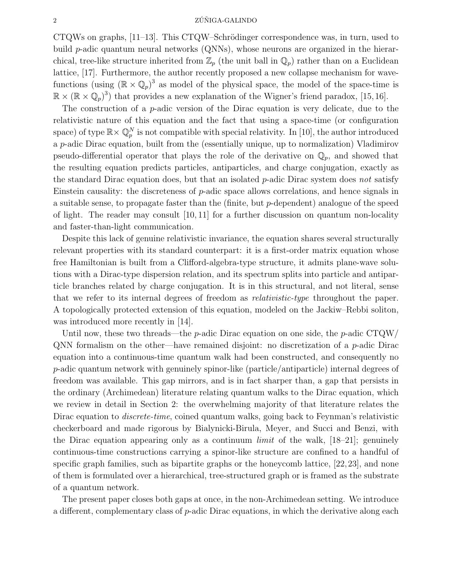
<figcaption class="paper-figure-caption"><b>Fig 1.</b> Low-resolution page preview, page 2</figcaption>
</figure>
<figure class="paper-figure-card">
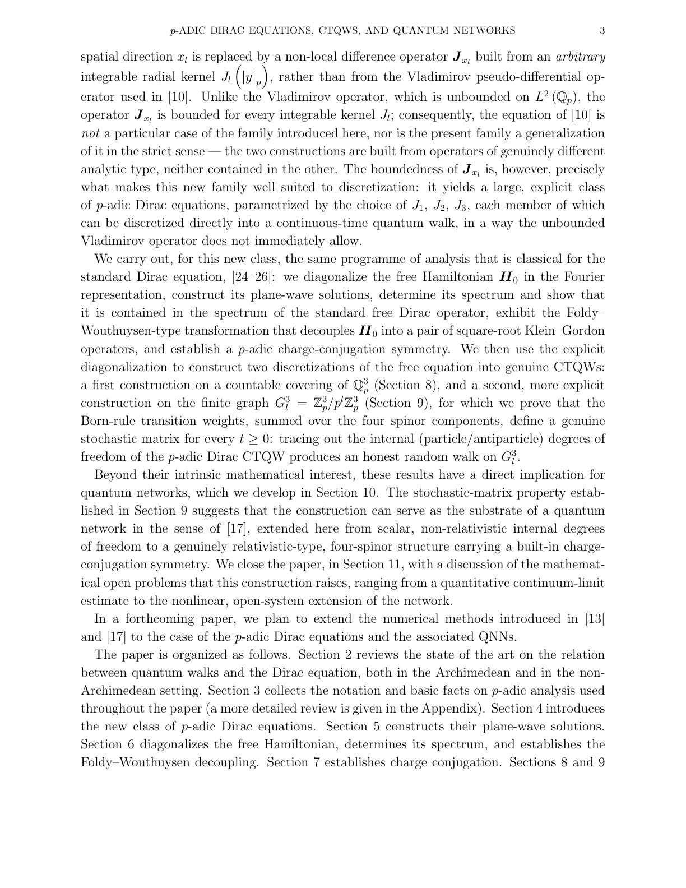
<figcaption class="paper-figure-caption"><b>Fig 2.</b> Low-resolution page preview, page 3</figcaption>
</figure>
<figure class="paper-figure-card">
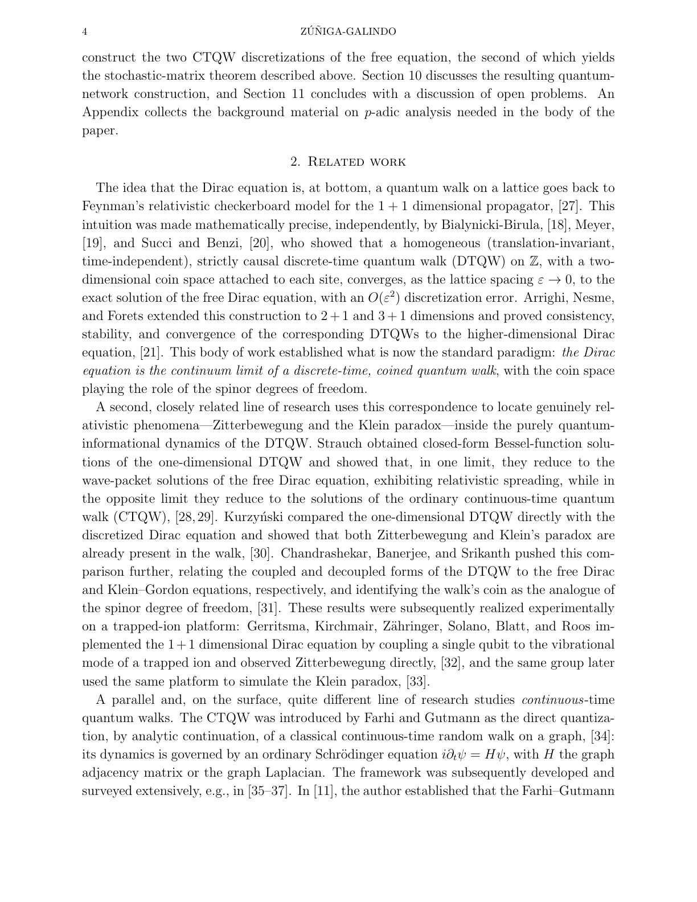
<figcaption class="paper-figure-caption"><b>Fig 3.</b> Low-resolution page preview, page 4</figcaption>
</figure>
<figure class="paper-figure-card">
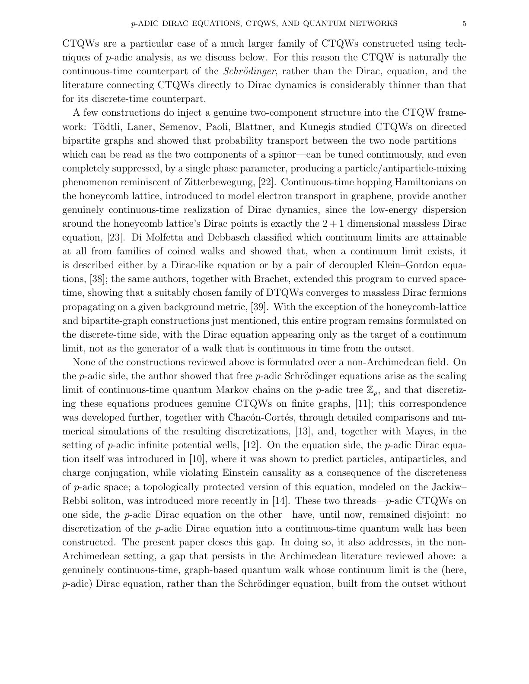
<figcaption class="paper-figure-caption"><b>Fig 4.</b> Low-resolution page preview, page 5</figcaption>
</figure>
<figure class="paper-figure-card">
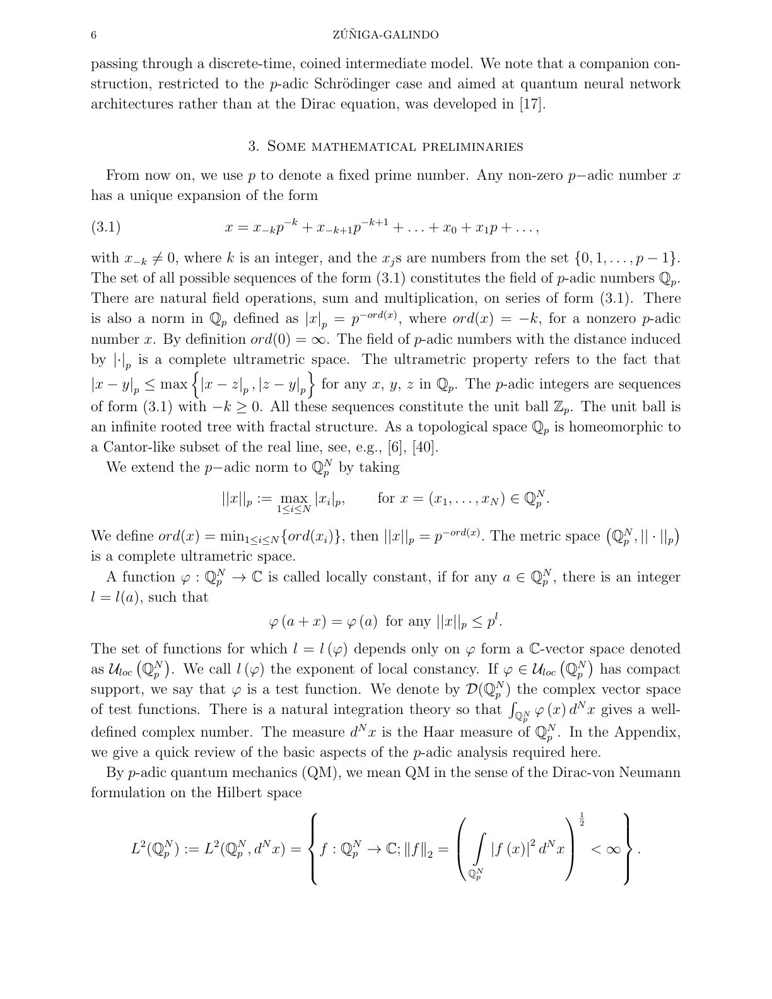
<figcaption class="paper-figure-caption"><b>Fig 5.</b> Low-resolution page preview, page 6</figcaption>
</figure>
</div>
<p><strong>Summary.</strong> This paper pioneers the connection between p-adic Dirac equations and Continuous-Time Quantum Walks by constructing a CTQW whose free dynamics exactly mirrors the p-adic Dirac equation on a hierarchical graph. This breakthrough provides a theoretical foundation for building quantum networks incorporating relativistic internal degrees of freedom within the non-Archimedean mathematical framework.</p>
<p><strong>Why it may be interesting.</strong> This work is highly relevant as it develops a framework for quantum computation and networking based on non-standard mathematical structures (p-adic numbers), potentially leading to novel quantum hardware models beyond standard lattice or photonic implementations.</p>
<details>
<summary>Detailed structure</summary>
<p><strong>Main problem.</strong> The paper addresses the theoretical challenge of constructing a continuous-time quantum walk (CTQW) whose free dynamics precisely matches a p-adic Dirac equation, thereby bridging non-Archimedean quantum mechanics with quantum walk theory.</p>
<p><strong>Main result.</strong> The authors introduce a novel construction showing that the free dynamics of a CTQW on a hierarchical, tree-structured p-adic graph exactly reproduces the p-adic Dirac equation, which can serve as a foundation for relativistic quantum networks.</p>
<p><strong>Method.</strong> The methodology involves diagonalizing the free p-adic Dirac Hamiltonian in momentum space and then discretizing the resulting equation using two methods: one on a countable covering and another explicitly on a finite, tree-structured graph.</p>
<p><strong>Model / system.</strong> The model centers on p-adic Dirac equations, which are formulated using non-local operators replacing standard spatial derivatives. The dynamics are analyzed through the lens of Continuous-Time Quantum Walks (CTQWs) on p-adic spaces ($\mathbb{Q}_p^N$) and hierarchical graphs.</p>
<p><strong>Key observables.</strong> The spectrum of the Hamiltonian, the proper normalization of transition probabilities (behaving like an ordinary random walk when internal structure is ignored), and the emergence of relativistic-type internal degrees of freedom (four-spinor structure).</p>
<p><strong>Important parameters / regimes.</strong> The p-adic norm $|\cdot|_p$, the level of discretization $l$ (for the graph $G^3_l$), and the integrable kernels defining the non-local operators.</p>
<p><strong>Assumptions / limitations.</strong> The primary assumption is the validity of extending standard quantum mechanical frameworks (like the Dirac equation) into the non-Archimedean p-adic setting. Limitations include the lack of a quantitative continuum limit estimate and the unaddressed coupling to gauge fields.</p>
<p><strong>Figures summary.</strong> Not specified in the notes.</p>
<p><strong>Paper structure.</strong> The paper first establishes the mathematical tools (Fourier transform on $\mathbb{Q}_p^N$) before tackling the physics. It then introduces the new p-adic Dirac equation, diagonalizes the free Hamiltonian, and proceeds to discretize the equation into two types of CTQWs, culminating in the discussion of its application to quantum networks and open problems.</p>
</details>
<details>
<summary>Abstract</summary>
<p>We introduce a new class of p-adic Dirac equations, formulated in the standard axiomatic framework of quantum mechanics, in which the ordinary spatial derivatives are replaced by non-local operators built from arbitrary integrable kernels. We diagonalize the resulting free Dirac Hamiltonian in momentum space, construct its plane-wave solutions, determine its spectrum, and establish a p-adic charge-conjugation symmetry relating particle and antiparticle sectors. We then discretize the free equation in two ways, both giving genuine continuous-time quantum walks rather than the discrete-time, coined walks that dominate the existing literature: a first construction on a countable covering of the underlying p-adic space, and a second, more explicit construction on a finite, tree-structured graph, for which we prove that the transition probabilities, once the internal (particle/antiparticle) components of the wavefunction are combined, form a genuine, properly normalized set of transition probabilities at every instant of time; in other words, ignoring the internal structure of the walk, it behaves exactly like an ordinary random walk on that graph. Building on this stochastic-matrix property, we discuss how the resulting construction can serve as the foundation of a quantum network with genuinely relativistic-type internal degrees of freedom, complementing earlier, non-relativistic p-adic quantum neural networks. To the best of our knowledge, this is the first continuous-time quantum walk whose free dynamics coincides exactly with a Dirac equation on a hierarchical graph. We close with a discussion of the open mathematical and computational problems raised by this construction.</p>
</details>
<p><sub><a href="#top">↑ back to top</a></sub></p>

<p><a id="paper-2609.05039"></a></p>
<h3 id="qlippy-a-retrieval-augmented-genai-assistant-for-reproducible-quantum-workflows-and-experiment-tracking"><a href="http://arxiv.org/abs/2609.05039v1">Qlippy: A Retrieval-Augmented GenAI Assistant for Reproducible Quantum Workflows and Experiment Tracking</a></h3>
<p><strong>Authors:</strong> Mahee Gamage, Vlad Stirbu<br>
<strong>Type:</strong> both · <strong>Category:</strong> quantum information and computing · <strong>PDF:</strong> <a href="https://arxiv.org/pdf/2609.05039v1">https://arxiv.org/pdf/2609.05039v1</a><br>
<strong>Analysis basis:</strong> full PDF text, analyzed in chunks</p>
<div class="figure-strip-hint">↔ Scroll figures horizontally</div>
<div class="paper-figures-scroll">
<figure class="paper-figure-card">
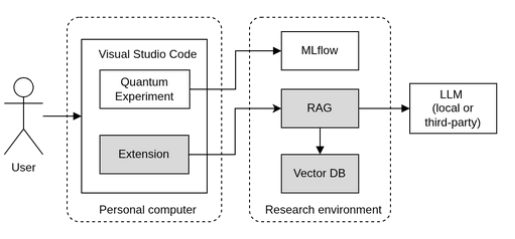
<figcaption class="paper-figure-caption"><b>Fig 1.</b> Fig. 1. The system architecture (newly developed components in gray)</figcaption>
</figure>
<figure class="paper-figure-card">

<figcaption class="paper-figure-caption"><b>Fig 2.</b> Fig. 2. Qlippy in the advisory scenario for experiment tracking.</figcaption>
</figure>
<figure class="paper-figure-card">
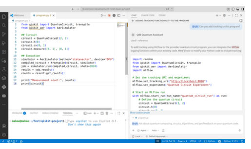
<figcaption class="paper-figure-caption"><b>Fig 3.</b> Fig. 3. Using the Qlippy in the injection of experiment tracking code</figcaption>
</figure>
</div>
<p><strong>Summary.</strong> This paper introduces Qlippy, a Retrieval-Augmented Generative AI assistant designed to solve the reproducibility crisis in quantum software development. Qlippy integrates into the coding environment to provide context-aware advice and automatically injects industry-standard experiment tracking code (like MLflow) into quantum programs. This makes advanced practices accessible to quantum developers while ensuring rigorous provenance tracking.</p>
<p><strong>Why it may be interesting.</strong> While focused on software engineering, the need for rigorous provenance tracking and reproducible workflows is critical for any advanced quantum simulation or algorithm development, impacting the reliability of results derived from complex quantum systems.</p>
<details>
<summary>Detailed structure</summary>
<p><strong>Main problem.</strong> Quantum software development is complex, error-prone, and lacks standardized tooling for tracking experiment provenance and ensuring reproducibility.</p>
<p><strong>Main result.</strong> Qlippy, a RAG-based AI assistant, successfully provides context-aware advisory support and actively augments quantum code to integrate MLflow-based experiment tracking.</p>
<p><strong>Method.</strong> The system uses a Retrieval-Augmented Generation (RAG) architecture, grounding LLM responses in a curated knowledge base to guide code augmentation and concept explanation.</p>
<p><strong>Model / system.</strong> The system is an AI assistant embedded in a development environment (VSCode) designed to interact with and modify quantum programs written using frameworks like Qiskit.</p>
<p><strong>Key observables.</strong> Experiment tracking metadata, structured provenance information aligned with the QProv schema, and successful execution of augmented code.</p>
<p><strong>Important parameters / regimes.</strong> The reliance on curated knowledge corpus size and the choice between local vs. commercial LLMs for deployment.</p>
<p><strong>Assumptions / limitations.</strong> The system assumes that domain knowledge can be effectively curated and retrieved to guide code generation, mitigating general LLM hallucination.</p>
<p><strong>Figures summary.</strong> Figure 1 illustrates the overall system architecture; Figure 2 shows Qlippy's advisory role in explaining tracking concepts; Figure 3 demonstrates the code augmentation process.</p>
<p><strong>Paper structure.</strong> The paper introduces the problem of quantum workflow reproducibility, details the Qlippy architecture (RAG components), demonstrates its advisory and augmentation capabilities, and presents preliminary evaluation results.</p>
</details>
<details>
<summary>Abstract</summary>
<p>Quantum software development is iterative and error-prone. Noisy hardware and repeated re-execution make experiment tracking, provenance, and reproducibility essential, yet these practices are hard to adopt because of tooling complexity and the specialized knowledge they demand. General-purpose language models can help but tend to hallucinate and lack grounding in domain-specific tooling. We present Qlippy, a retrieval-augmented GenAI assistant embedded in the development environment that grounds its responses in a curated corpus of quantum-software-engineering knowledge. Qlippy explains reproducibility and provenance concepts in context and augments existing Qiskit programs with MLflow-based experiment tracking aligned to the QProv schema. By separating knowledge from model parameters, grounding gives explicit control over the scope and provenance of the assistant's responses and reduces reliance on model scale, which points toward low-cost, privacy-preserving local deployment.</p>
</details>
<p><sub><a href="#top">↑ back to top</a></sub></p>

<p><a id="paper-2609.04652"></a></p>
<h3 id="qmes-quantum-meta-learning-for-encoding-selection-in-quantum-kernel-methods"><a href="http://arxiv.org/abs/2609.04652v1">Qmes: Quantum Meta-Learning for Encoding Selection in Quantum Kernel Methods</a></h3>
<p><strong>Authors:</strong> Dao Duy Tung, Quoc Chuong Nguyen, Vu Tuan Hai, Le Bin Ho, Lan Nguyen Tran<br>
<strong>Type:</strong> theory · <strong>Category:</strong> quantum information and computing · <strong>PDF:</strong> <a href="https://arxiv.org/pdf/2609.04652v1">https://arxiv.org/pdf/2609.04652v1</a><br>
<strong>Analysis basis:</strong> full PDF text, analyzed in chunks</p>
<div class="figure-strip-hint">↔ Scroll figures horizontally</div>
<div class="paper-figures-scroll">
<figure class="paper-figure-card">
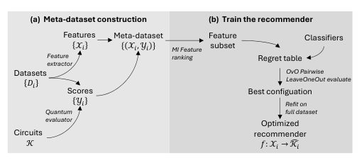
<figcaption class="paper-figure-caption"><b>Fig 1.</b> FIG. 1. Overview of the proposed circuit selection framework. Stage (a): data processing and ground-truth label generation. Stage (b): recommender training with multiple classifiers and feature subset configurations.</figcaption>
</figure>
<figure class="paper-figure-card">
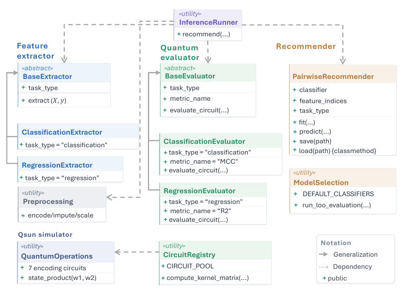
<figcaption class="paper-figure-caption"><b>Fig 2.</b> FIG. 2. Software architecture of Qmes. The three core components are defined as abstract base classes with task-specific subclasses, and are supported by four utility modules.</figcaption>
</figure>
<figure class="paper-figure-card">
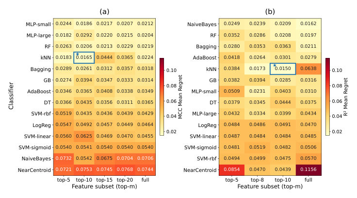
<figcaption class="paper-figure-caption"><b>Fig 3.</b> FIG. 3. LOO mean regret across all classifier-feature subset configurations for (a) classification (¯ρ(MCC)) and (b) regression (¯ρ(R2)). Lower values (lighter cells) are better. In each panel, the minimum-regret configuration is marked with ⋆, and classifiers are ordered by ascending overall mean regret within that panel.</figcaption>
</figure>
<figure class="paper-figure-card">
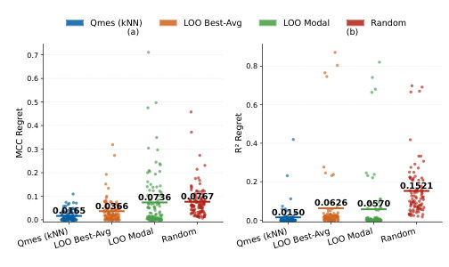
<figcaption class="paper-figure-caption"><b>Fig 4.</b> FIG. 4. Per-dataset regret ρi of the Qmes kNN Recommender compared with the three baselines above, for (a) classification (MCC regret) and (b) regression (R2 regret). Each point is one dataset; horizontal bars mark the mean regret ¯ρ per group (annotated).</figcaption>
</figure>
<figure class="paper-figure-card">
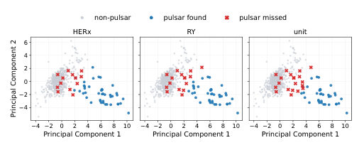
<figcaption class="paper-figure-caption"><b>Fig 5.</b> FIG. 5. Classification of the HTRU2 candidates under each recommended encoding. One panel per circuit; each point is one candidate: grey marks a non-pulsar, blue a pulsar that is classified correctly, and a red cross a pulsar that is misclassi- fied as noise. The axes are the first two principal components of the standardised features.</figcaption>
</figure>
</div>
<p><strong>Summary.</strong> This paper introduces Qmes, a meta-learning framework designed to automate the selection of optimal quantum encoding circuits for Quantum Kernel Methods. By training a classical recommender model on a large meta-dataset, Qmes predicts high-performing circuits without needing expensive quantum evaluations at inference time. This makes QKMs significantly more practical for real-world data analysis.</p>
<p><strong>Why it may be interesting.</strong> While focused on ML, the reliance on quantum circuits as the core computational primitive makes this highly relevant to understanding the practical utility and limitations of quantum feature mapping in quantum information processing.</p>
<details>
<summary>Detailed structure</summary>
<p><strong>Main problem.</strong> The primary challenge addressed is the computationally expensive selection of an optimal encoding quantum circuit for Quantum Kernel Methods (QKMs).</p>
<p><strong>Main result.</strong> The proposed Qmes package significantly reduces the mean recommendation regret for both classification (2.2x) and regression (4.2x) compared to non-adaptive baselines.</p>
<p><strong>Method.</strong> The authors developed Qmes, an open-source meta-learning framework that trains a classical recommender model on a meta-dataset derived from evaluating many circuits across numerous benchmark datasets.</p>
<p><strong>Model / system.</strong> The system involves Quantum Kernel Methods, where the quantum kernel is defined by the overlap of quantum states $|\phi(x)
angle$ generated by an encoding circuit $U(x)$. The meta-learning process uses classical ML to predict circuit performance.</p>
<p><strong>Key observables.</strong> Mean recommendation regret ($ar{
ho}$), Matthews correlation coefficient (MCC) for classification, and the coefficient of determination ($R^2$) for regression.</p>
<p><strong>Important parameters / regimes.</strong> The meta-dataset comprises 105 classification and 86 regression benchmark datasets. The process is limited to noiseless state-vector simulation.</p>
<p><strong>Assumptions / limitations.</strong> The process assumes the use of fixed, non-trainable circuits and relies on noiseless state-vector simulation, ignoring hardware noise.</p>
<p><strong>Figures summary.</strong> Figure 1 illustrates the two-stage pipeline: meta-dataset construction (evaluating circuits on many datasets) and recommender training. Figure 2 details the software architecture, showing components like FeatureExtractor and Recommender.</p>
<p><strong>Paper structure.</strong> The paper first establishes the problem of circuit selection in QKMs. It then details the Qmes methodology, involving meta-feature extraction, training a recommender model (using an One-vs-One approach), and finally evaluating performance by minimizing mean regret on benchmark datasets.</p>
</details>
<details>
<summary>Abstract</summary>
<p>Selecting an effective encoding quantum circuit is a key challenge in quantum kernel methods because different feature maps can lead to different performance. Conventional methods require constructing and evaluating every circuit for each new dataset, making it computationally expensive. We present Qmes, an open-source Python package that automatically recommends circuits through meta-learning. Qmes characterizes a dataset using classical complexity measures and queries a pre-trained model to recommend circuits without quantum evaluation at inference time. The package provides modular components for meta-feature extraction, quantum-kernel evaluation, recommender training, model selection, and user-defined circuit extension. We validate Qmes on 105 classification and 86 regression benchmark datasets. Qmes reduces the mean recommendation regret by 2.2x and 4.2x for classification and regression, respectively, compared to a non-adaptive baseline, with statistical significance confirmed via a paired Wilcoxon signed-rank test ($p < 10^{-4}$). Qmes thus enables efficient and practical encoding-circuit selection for quantum kernel methods.</p>
</details>
<p><sub><a href="#top">↑ back to top</a></sub></p>

<p><a id="paper-2609.04367"></a></p>
<h3 id="quantum-graph-neural-networks-for-jet-tagging-on-quantum-hardware"><a href="http://arxiv.org/abs/2609.04367v1">Quantum Graph Neural Networks for Jet Tagging on Quantum Hardware</a></h3>
<p><strong>Authors:</strong> Benjamin Jobilal, Jinghong Yang, Trevor Smith, Vincent Calvo, Zhong-Bo Kang, Shabnam Jabeen<br>
<strong>Type:</strong> theory · <strong>Category:</strong> other · <strong>PDF:</strong> <a href="https://arxiv.org/pdf/2609.04367v1">https://arxiv.org/pdf/2609.04367v1</a><br>
<strong>Analysis basis:</strong> full PDF text, analyzed in chunks</p>
<div class="figure-strip-hint">↔ Scroll figures horizontally</div>
<div class="paper-figures-scroll">
<figure class="paper-figure-card">
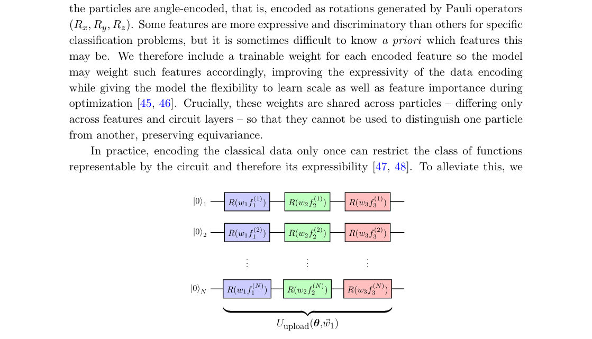
<figcaption class="paper-figure-caption"><b>Fig 1.</b> Figure 1: A single N-qubit encoding layer in which qubit i receives angle-encoded features {f(i) 1 , f(i) 2 , f(i) 3 } weighted by a shared uniform vector ⃗w = (w1, w2, w3), constituting one upload block Uupload(θ, ⃗w). Each qubit starts in the initial state |0⟩.</figcaption>
</figure>
<figure class="paper-figure-card">
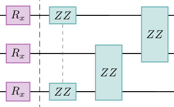
<figcaption class="paper-figure-caption"><b>Fig 2.</b> Figure 2: One layer Lθk(A) as defined in the main text for N = 3 qubits. In the depicted layer, the node gates (Rx) are parametrized by θnode and the edge gates (ZZ) are parametrized by θedge.</figcaption>
</figure>
<figure class="paper-figure-card">
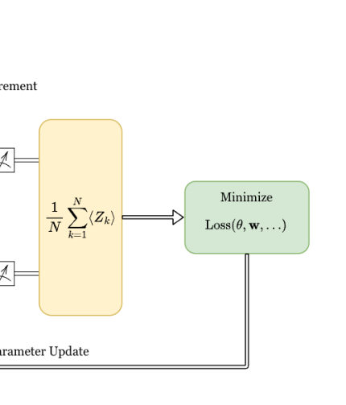
<figcaption class="paper-figure-caption"><b>Fig 3.</b> Figure 3: A summary of our Quantum Graph Neural Network.</figcaption>
</figure>
<figure class="paper-figure-card">
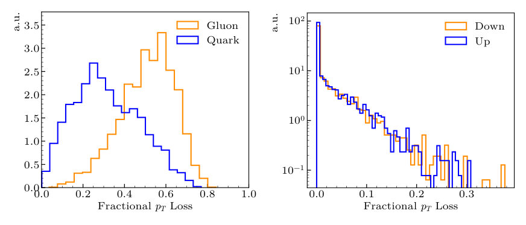
<figcaption class="paper-figure-caption"><b>Fig 4.</b> Figure 4: Total removed fraction of pT for each jet as a result of the 5-particle and 10- particle truncation schemes for the quark-gluon and flavor models respectively. A larger pT loss indicates that more of the jet’s transverse momentum is lost post-truncation.</figcaption>
</figure>
<figure class="paper-figure-card">
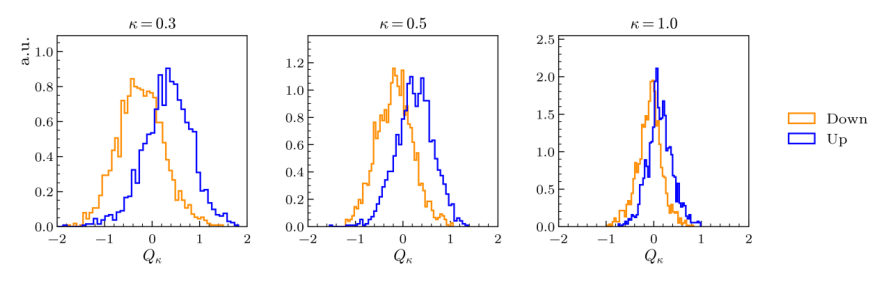
<figcaption class="paper-figure-caption"><b>Fig 5.</b> Figure 5: Jet Charge distributions for up (blue) and down (yellow) jets for κ = 0.3 (left), κ = 0.5 (middle), and κ = 1.0 (right).</figcaption>
</figure>
</div>
<p><strong>Summary.</strong> This paper proposes using a permutation-invariant Quantum Graph Neural Network (QGNN) to classify particle jets in high-energy physics experiments. The model is tested on quark/gluon and up/down quark tagging tasks, showing competitive performance against classical methods in simulations. Crucially, the authors perform an interpretability analysis, linking the quantum model's learned features back to established physical observables like jet charge and angularities.</p>
<p><strong>Why it may be interesting.</strong> While the primary focus is high-energy physics, the methodology involves applying quantum machine learning (QML) techniques (QGNNs) to complex, structured data, which shares conceptual overlap with advanced pattern recognition in condensed matter systems.</p>
<details>
<summary>Detailed structure</summary>
<p><strong>Main problem.</strong> The paper addresses jet classification in high-energy particle collisions, specifically distinguishing between quark vs. gluon jets and performing up vs. down quark flavor tagging.</p>
<p><strong>Main result.</strong> The Quantum Graph Neural Network (QGNN) performs competitively against classical benchmarks in ideal simulations and shows promising results when deployed on current quantum hardware.</p>
<p><strong>Method.</strong> A permutation-invariant QGNN, implemented via a Variational Quantum Classifier (VQC), is used to process particle-cloud representations of jets.</p>
<p><strong>Model / system.</strong> The system is jets formed in high-energy collisions (LHC/EIC). The model is a QGNN ansatz designed to be equivariant under the symmetric group, applied to particle features like $(z, \eta, \phi)$ or including PID/charge.</p>
<p><strong>Key observables.</strong> Quark vs. gluon discrimination, up vs. down quark flavor tagging, generalized angularities ($\lambda^\kappa_eta$), and jet charge ($Q_\kappa$).</p>
<p><strong>Important parameters / regimes.</strong> Number of layers ($L=6$), trainable parameters (e.g., 30 or 42), and the particle truncation limit (e.g., 5 or 10 particles).</p>
<p><strong>Assumptions / limitations.</strong> The analysis assumes that the QGNN can learn physically relevant correlations, and the hardware deployment is limited by current QPU fidelity and scale.</p>
<p><strong>Figures summary.</strong> Figures illustrate the L1/L2 norms of cross-layer weights showing feature importance (e.g., $z$ for QG, $q$ for UD), and the distance correlation ($   ext{dCor}$) between the QGNN score and established physical observables like angularities and jet charge.</p>
<p><strong>Paper structure.</strong> The paper introduces the physical problem, details the QGNN architecture ensuring permutation invariance, applies it to two specific tagging tasks (QG and UD), and concludes with an interpretability analysis correlating model weights to known physical observables.</p>
</details>
<details>
<summary>Abstract</summary>
<p>Jets are central to the physics programs of both current and future colliders, from precision Standard Model measurements and searches for new physics at the Large Hadron Collider to studies of nucleon structure at the future Electron-Ion Collider. Motivated by these applications, we explore quantum machine learning for jet classification and present a permutation-invariant Quantum Graph Neural Network (QGNN) applied to particle-cloud representations of jets. We apply the model to two such discrimination tasks: quark vs. gluon and up vs. down quark flavor tagging, with the latter being, to our knowledge, the first application of a quantum model to this problem. In the ideal simulation, the QGNN performs competitively against the Particle Flow Network and traditional QCD observables. We further deploy scaled-down models to IBM and IonQ quantum processing units (QPUs), where we train and evaluate them, obtaining promising results. Finally, we perform an interpretability analysis to characterize the observables learned by the quantum model, relating them to generalized angularities for the quark-gluon study and to jet charge for the flavor study.</p>
</details>
<p><sub><a href="#top">↑ back to top</a></sub></p>

<p><a id="paper-2609.05238"></a></p>
<h3 id="quantum-optimisation-for-protein-protein-interaction-network-alignment"><a href="http://arxiv.org/abs/2609.05238v1">Quantum Optimisation for Protein-Protein Interaction Network Alignment</a></h3>
<p><strong>Authors:</strong> Merle Stahl, Robert J. Banks, Matthias Traube, Josua Unger, Wolfgang Lechner, Jan Baumbach, Mhaned Oubounyt<br>
<strong>Type:</strong> theory · <strong>Category:</strong> quantum information and computing · <strong>PDF:</strong> <a href="https://arxiv.org/pdf/2609.05238v1">https://arxiv.org/pdf/2609.05238v1</a><br>
<strong>Analysis basis:</strong> full PDF text, analyzed in chunks</p>
<div class="figure-strip-hint">↔ Scroll figures horizontally</div>
<div class="paper-figures-scroll">
<figure class="paper-figure-card">
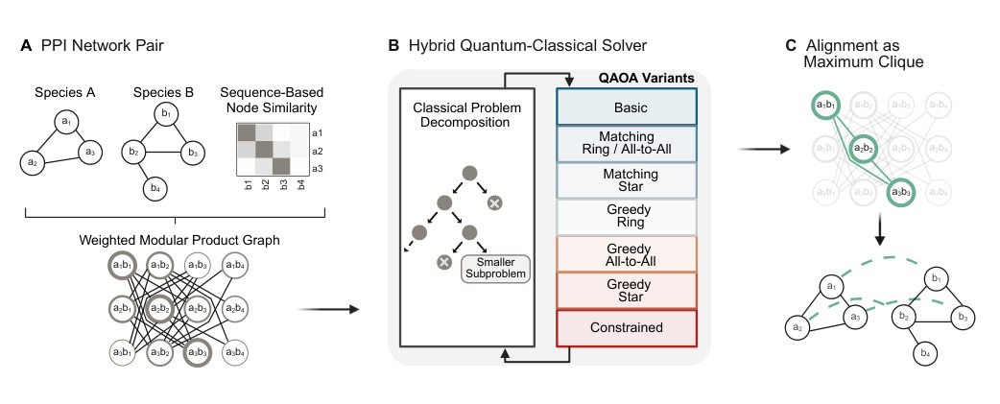
<figcaption class="paper-figure-caption"><b>Fig 1.</b> Figure 1. Overview of the QAOA-based pipeline for PPI network alignment. (A) The two PPI networks to be aligned, together with a sequence-based node-similarity matrix between their proteins, are combined into a weighted modular product graph. Its nodes are candidate protein pairs, weighted by sequence similarity, and two nodes are adjacent if the pairs they represent are compatible, i.e. if the corresponding proteins are connected in both networks or in neither. (B) The maximum-weight clique problem on the modular product graph is reformulated as a minimum-weight vertex cover problem on the complement graph and reduced to a QUBO. Branch-and-bound with kernelisation shrinks each instance to...</figcaption>
</figure>
<figure class="paper-figure-card">
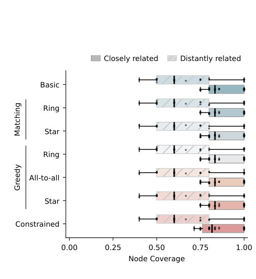
<figcaption class="paper-figure-caption"><b>Fig 2.</b> Figure 2. Node coverage of the QAOA variants on the small NAPAbench2 instances. Solid boxes are closely related pairs, hatched boxes distantly related ones. Colours run from blue to red as feasibility moves from the penalty term (Basic) into the mixer (Constrained).</figcaption>
</figure>
<figure class="paper-figure-card">
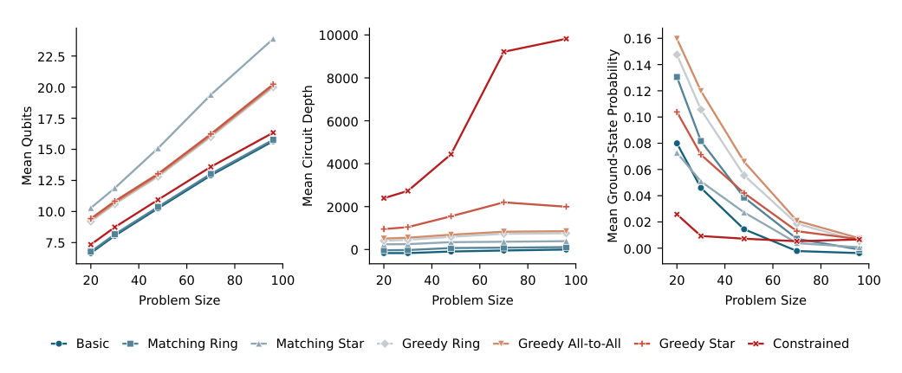
<figcaption class="paper-figure-caption"><b>Fig 3.</b> Figure 3. Hardware cost and sampler behaviour of the QAOA variants on closely related synthetic pairs. Qubit count, circuit depth (decomposed to a {u, cx} basis), and ground-state probability, the fraction of samples that hit the exact optimum with increasing problem size. Colours run from blue to red as feasibility moves from the penalty term (Basic) into the mixer (Constrained).</figcaption>
</figure>
<figure class="paper-figure-card">
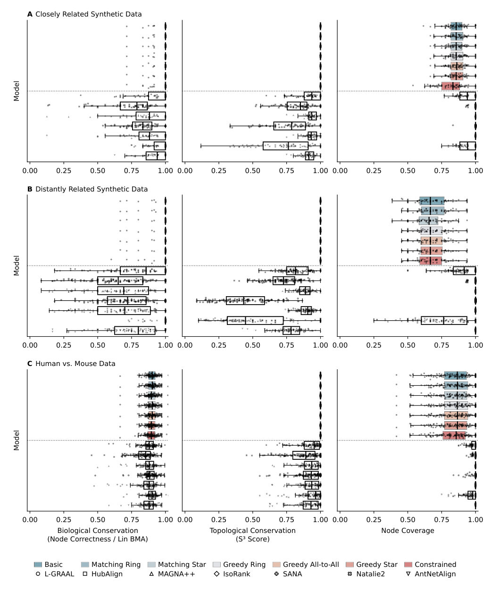
<figcaption class="paper-figure-caption"><b>Fig 4.</b> Figure 4. Alignment quality of the branch-and-bound decomposition combined with the QAOA variants com- pared against the classical aligners. Each panel shows the distribution of alignment quality over network pairs for one metric: biological conservation (node correctness for synthetic data, Lin best-match-average GO semantic similarity for real- world data), topological conservation (S3 score), and node coverage. Rows correspond to (A) closely related and (B) distantly related synthetic NAPAbench2 pairs, and (C) real human–mouse KEGG pathway pairs. Colours run from blue to red as feasibility moves from the penalty term (Basic) into the mixer (Constrained).</figcaption>
</figure>
<figure class="paper-figure-card">
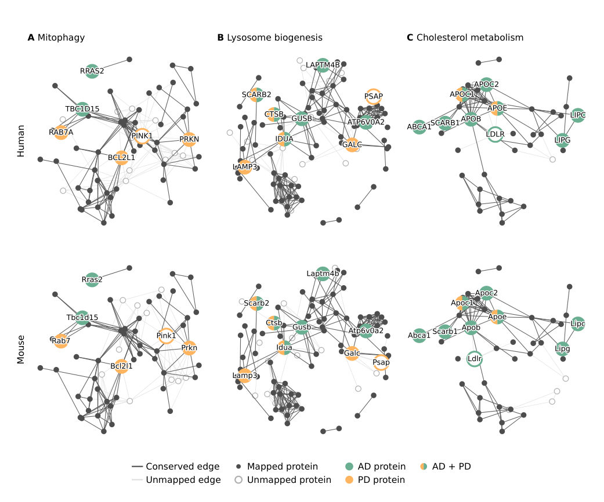
<figcaption class="paper-figure-caption"><b>Fig 5.</b> Figure 5. Cross-species alignment of disease-protein neighbourhoods in three neurodegeneration-associated pathways. Human and mouse STRING networks for (A) Mitophagy (KEGG hsa04137), (B) Lysosome biogenesis (hsa04142) and (C) Cholesterol metabolism (hsa04979). Proteins whose genes are associated with Alzheimer’s disease (AD) in Open Targets are shown in green, those associated with Parkinson’s disease (PD) in yellow. Proteins aligned to a counterpart by the Matching Ring QAOA variant are drawn at matching positions in the two species’ layouts.</figcaption>
</figure>
</div>
<p><strong>Summary.</strong> This paper proposes using quantum optimization, specifically multiple QAOA formulations, to solve the NP-hard problem of aligning PPI networks across species. By mapping the alignment to a minimum vertex cover problem, the authors demonstrate a hybrid quantum-classical solver. The results confirm the potential of quantum methods for this biological problem while clearly outlining the current resource limitations regarding circuit depth and qubit count.</p>
<p><strong>Why it may be interesting.</strong> It provides a concrete, complex application of quantum optimization algorithms (QAOA) to a highly structured problem in computational biology, demonstrating the necessary trade-offs between circuit depth and solution quality.</p>
<details>
<summary>Detailed structure</summary>
<p><strong>Main problem.</strong> The paper addresses the challenge of optimally aligning Protein-Protein Interaction (PPI) networks across different species, which is modeled as a weighted maximum common induced subgraph problem.</p>
<p><strong>Main result.</strong> The developed hybrid quantum-classical framework using QAOA variants achieves high topological conservation comparable to classical methods, though this comes at the cost of reduced node coverage.</p>
<p><strong>Method.</strong> The problem is reformulated as a minimum-weight vertex cover problem, which is then solved using a hybrid approach combining classical branch-and-bound decomposition with multiple Quantum Approximate Optimization Algorithm (QAOA) formulations.</p>
<p><strong>Model / system.</strong> The system involves PPI networks, which are modeled using a modular product graph. The optimization is framed by mapping the problem to a QUBO/Ising Hamiltonian, suitable for QAOA execution.</p>
<p><strong>Key observables.</strong> Topological conservation, biological conservation, and node coverage of the aligned subnetwork.</p>
<p><strong>Important parameters / regimes.</strong> QAOA depth (p), penalty parameter (lambda), and the number of qubits (limited to $\le 33$ by the branch-and-bound decomposition).</p>
<p><strong>Assumptions / limitations.</strong> The primary limitation is the resource requirement, suggesting that quantum advantage might require fault-tolerant hardware beyond current capabilities.</p>
<p><strong>Figures summary.</strong> Figure 1 illustrates the entire QAOA-based pipeline: combining networks into a weighted graph, reformulating it as a vertex cover, and solving it via QAOA within a branch-and-bound structure.</p>
<p><strong>Paper structure.</strong> The paper first defines the PPI alignment problem and its mathematical formulation (MCIS $
ightarrow$ Min-Weight Vertex Cover). It then details the quantum approach using multiple QAOA variants, comparing constraint enforcement methods. Finally, it applies this framework to synthetic and real-world KEGG pathway benchmarks.</p>
</details>
<details>
<summary>Abstract</summary>
<p>Protein-protein interaction (PPI) network alignment combines topological and sequence information to identify conserved modules across species, but global alignment remains challenging: heuristics sacrifice optimality, while exact methods lack scalability. We model the alignment as a weighted maximum common induced subgraph problem and reformulate it through the modular product graph to a minimum-weight vertex cover on the complement, with node weights carrying sequence similarity. To solve this problem, we develop a hybrid framework combining kernelisation, branch-and-bound, and seven Quantum Approximate Optimisation Algorithm (QAOA) formulations. These formulations differ in how the cover constraints are enforced, from penalty terms in the cost Hamiltonian to mixers confined to the feasible subspace. For single round QAOA, we derive closed-form expressions for the expected cost of four circulant mixer variants, enabling performance characterisation without circuit simulation. Applied to synthetic and real-world networks reduced to KEGG pathways, the QAOA formulations achieve high topological conservation on the aligned core while at least maintaining biological conservation comparable to leading classical aligners, at the cost of reduced node coverage. Across selected KEGG pathways, the aligned subnetworks retain disease-associated proteins, preserving biologically relevant information. Cheaper formulations leave more edges uncovered, while enforcing feasibility in the mixer raises circuit depth by one to two orders of magnitude. Together, these results highlight the potential of quantum optimisation for PPI network alignment and the resource trade-offs that will shape its scalability as quantum hardware matures.</p>
</details>
<p><sub><a href="#top">↑ back to top</a></sub></p>

<p><a id="paper-2609.05219"></a></p>
<h3 id="robustness-of-rkky-interactions-across-a-weyl-node-annihilation-transition"><a href="http://arxiv.org/abs/2609.05219v1">Robustness of RKKY interactions across a Weyl node-annihilation transition</a></h3>
<p><strong>Authors:</strong> João V. F. Alves, Joelson F. Silva, Luis G. G. V. Dias da Silva<br>
<strong>Type:</strong> theory · <strong>Category:</strong> strongly correlated electrons · <strong>PDF:</strong> <a href="https://arxiv.org/pdf/2609.05219v1">https://arxiv.org/pdf/2609.05219v1</a><br>
<strong>Analysis basis:</strong> full PDF text, analyzed in chunks</p>
<div class="figure-strip-hint">↔ Scroll figures horizontally</div>
<div class="paper-figures-scroll">
<figure class="paper-figure-card">
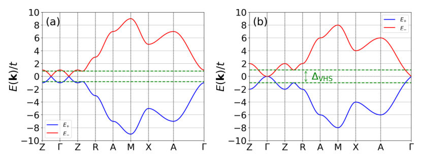
<figcaption class="paper-figure-caption"><b>Fig 1.</b> Figure 1: Band structure along the high-symmetry points of the Brillouin zone for the two-band tight-binding model with m = 2 and (a) k0 = π/2, (b) k0 = 0. Dashed green lines mark the energies of the Van-Hove singularities, separated by an energy interval ∆VHS. Notice that the well-defined Weyl nodes at (0, 0, ±π/2) in (a) have merged into a quadratic band-touching at the Γ point in (b).</figcaption>
</figure>
<figure class="paper-figure-card">
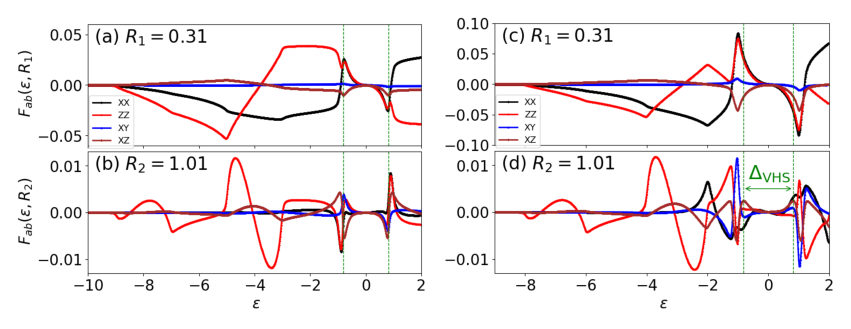
<figcaption class="paper-figure-caption"><b>Fig 2.</b> Figure 2: Integrand of Eqs. (28) for m = 2 and (a,b) k0 = π/2 (Weyl semimetal) (c,d) k0 = 0 (merged Weyl cones) and for R = 0.31 (a,c) and R = 1.01 (b,d). The vertical dashed lines indicate the energies of the Van-Hove singularities, separated by ∆VHS.</figcaption>
</figure>
<figure class="paper-figure-card">

<figcaption class="paper-figure-caption"><b>Fig 3.</b> Figure 3: RKKY matrix elements in (a) log-linear (b) linear-linear scale for ϵF = 0, m = 2 and k0 = π/2.</figcaption>
</figure>
<figure class="paper-figure-card">
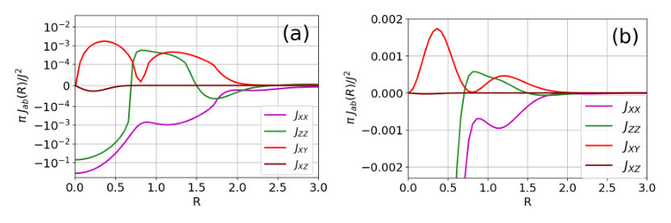
<figcaption class="paper-figure-caption"><b>Fig 4.</b> Figure 4 explores the behavior of the RKKY interaction matrix the Fermi energy is varied away from charge neutrality. For Fermi energy values within the VHS gap (|ϵF| &lt; ∆VHS/2 ≈1.0t, Figs. 4(a-b)), the overall behavior is the same as in the charge</figcaption>
</figure>
<figure class="paper-figure-card">
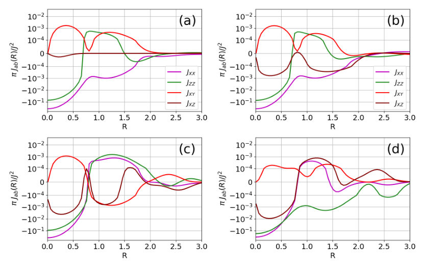
<figcaption class="paper-figure-caption"><b>Fig 5.</b> Figure 4: RKKY matrix elements for k0 = π/2 and different values of the Fermi energy (a) ϵF = 0 (b) ϵF = 0.5 (c) ϵF = 1.0 (d) (c) ϵF = 2.0.</figcaption>
</figure>
</div>
<p><strong>Summary.</strong> This theoretical work analyzes the RKKY magnetic interaction in Weyl semimetals as they undergo a topological phase transition (Weyl node annihilation). By calculating the exchange tensor using full-band tight-binding methods, the authors demonstrate that the magnetic coupling strength is robust across the transition. This implies that the interaction is governed by the global quantum metric of the entire band structure, offering key insights for material design.</p>
<p><strong>Why it may be interesting.</strong> The finding that global band structure properties govern magnetic interactions, rather than just local topological features, provides a crucial, non-trivial constraint for modeling magnetic anisotropy in topological materials.</p>
<details>
<summary>Detailed structure</summary>
<p><strong>Main problem.</strong> The study investigates the robustness of the Ruderman-Kittel-Kasuya-Yosida (RKKY) interaction when the underlying electronic structure undergoes a Weyl node-annihilation transition.</p>
<p><strong>Main result.</strong> The spatial profile, magnitude, and anisotropic structure of the RKKY exchange couplings remain remarkably robust across the transition, suggesting mediation by the global, Brillouin-zone-integrated quantum metric rather than local Berry curvature monopoles.</p>
<p><strong>Method.</strong> The RKKY tensor is derived analytically using energy-integrating real-space Green's functions calculated across the entire Brillouin zone for two-band spinful lattice systems.</p>
<p><strong>Model / system.</strong> The system is a time-reversal symmetry-breaking Weyl semimetal modeled by a two-band tight-binding lattice Hamiltonian, which is tuned to interpolate between a Weyl phase and a quadratic band-touching semimetal phase.</p>
<p><strong>Key observables.</strong> The full RKKY exchange tensor, decomposed into Heisenberg, anisotropic Ising, and Dzyaloshinskii-Moriya (DM) terms; the spatial profile and magnitude of these couplings.</p>
<p><strong>Important parameters / regimes.</strong> Fermi energy ($\epsilon_F$), lattice coupling constants ($t$), and the parameter controlling the Weyl node separation ($k_0$).</p>
<p><strong>Assumptions / limitations.</strong> The analysis relies on full-band tight-binding formulations, emphasizing that low-energy linearized continuum models are insufficient for accurate predictions.</p>
<p><strong>Figures summary.</strong> Figures illustrate the dependence of the DM term on $\epsilon_F$ (showing suppression at charge neutrality) and the overall RKKY coupling strength across the node-annihilation transition, comparing tight-binding results to free electron gas predictions.</p>
<p><strong>Paper structure.</strong> The paper develops a unified matrix framework for the RKKY tensor, calculates the exchange couplings using Green's functions, and then applies this framework to study the transition between Weyl and semimetallic phases, focusing on the persistence of coupling structure.</p>
</details>
<details>
<summary>Abstract</summary>
<p>Weyl semimetals (WSMs), with their unique topological properties and distinct electronic structure, exhibit intriguing properties when either time-reversal or inversion symmetries are broken. In this work, we consider the Ruderman-Kittel-Kasuya-Yosida (RKKY) interaction between magnetic impurities in time-reversal symmetry-breaking WSMs. We derive analytical expressions for the full RKKY exchange tensor in arbitrary two-band spinful lattice systems. Our approach reveals both Heisenberg, anisotropic Ising and Dzyaloshinsky-Moriya terms, which can be calculated by energy-integrating real-space Green's functions across the entire Brillouin zone, with the band edge acting as a natural energy cutoff. We apply this framework to study a two-band tight-binding model for a time-reversal symmetry-breaking WSM that interpolates between a Weyl phase with well-separated chiral nodes and a quadratic band-touching semimetal phase. Remarkably, the spatial profile, magnitude, and anisotropic tensor structure of the exchange couplings remain persistent across the node-annihilation transition. This topological robustness reveals that short- and intermediate-range RKKY interactions are mediated by the global, Brillouin-zone-integrated quantum metric of the full valence band rather than being strictly dictated by local low-energy Berry curvature monopoles. These findings demonstrate the necessity of full-band tight-binding formulations when predicting real-space magnetic interactions, providing key insights for electric-field tuning of magnetic anisotropy and constructing realistic models of heavy-fermion and Weyl-Kondo semimetals.</p>
</details>
<p><sub><a href="#top">↑ back to top</a></sub></p>

<p><a id="paper-2609.05225"></a></p>
<h3 id="the-marginal-is-pretty-good"><a href="http://arxiv.org/abs/2609.05225v1">The marginal is pretty good</a></h3>
<p><strong>Authors:</strong> Lukas Schmitt, Joseph M. Renes<br>
<strong>Type:</strong> theory · <strong>Category:</strong> quantum information and computing · <strong>PDF:</strong> <a href="https://arxiv.org/pdf/2609.05225v1">https://arxiv.org/pdf/2609.05225v1</a><br>
<strong>Analysis basis:</strong> full PDF text, analyzed in chunks</p>
<div class="figure-strip-hint">↔ Scroll figures horizontally</div>
<div class="paper-figures-scroll">
<figure class="paper-figure-card">

<figcaption class="paper-figure-caption"><b>Fig 1.</b> Low-resolution page preview, page 2</figcaption>
</figure>
<figure class="paper-figure-card">

<figcaption class="paper-figure-caption"><b>Fig 2.</b> Low-resolution page preview, page 3</figcaption>
</figure>
<figure class="paper-figure-card">

<figcaption class="paper-figure-caption"><b>Fig 3.</b> Low-resolution page preview, page 4</figcaption>
</figure>
<figure class="paper-figure-card">

<figcaption class="paper-figure-caption"><b>Fig 4.</b> Low-resolution page preview, page 5</figcaption>
</figure>
<figure class="paper-figure-card">

<figcaption class="paper-figure-caption"><b>Fig 5.</b> Low-resolution page preview, page 6</figcaption>
</figure>
</div>
<p><strong>Summary.</strong> This paper analyzes the error incurred when simplifying the optimal state used in one-shot quantum information measures, such as the Petz-Rényi divergence. The authors prove that using the marginal state instead of the true optimal state introduces an overhead factor bounded by $1/\alpha$. This result is significant for theoretical quantum information science as it quantifies the practical accuracy of using marginal approximations.</p>
<p><strong>Why it may be interesting.</strong> This work provides concrete, quantitative bounds on approximation errors in quantum information measures, which is crucial for designing robust quantum protocols and understanding the limitations of using simplified state representations.</p>
<details>
<summary>Detailed structure</summary>
<p><strong>Main problem.</strong> The paper investigates the error introduced when approximating the optimal state $\sigma_B$ in one-shot quantum information measures (like Petz-Rényi divergence) with the marginal state $
ho_B$.</p>
<p><strong>Main result.</strong> It proves that for the Petz-Rényi divergence $D_\alpha$ with $\alpha \in [1/2, 1)$, replacing the optimal state with the marginal state results in a multiplicative overhead of at most $1/\alpha$.</p>
<p><strong>Method.</strong> The analysis relies on proving operator inequalities and applying variational formulas to compare the divergence calculated using the marginal state versus the minimum over all possible states.</p>
<p><strong>Model / system.</strong> The study is set in the context of quantum information theory, analyzing bipartite quantum states $
ho_{AB}$ and their marginal states $
ho_B$. The measures used are quantum divergences, specifically the Petz-Rényi and sandwiched Rényi divergences.</p>
<p><strong>Key observables.</strong> Petz-Rényi divergence $D_\alpha$, sandwiched Rényi divergence $   ilde{D}_\alpha$, and fidelity $F$.</p>
<p><strong>Important parameters / regimes.</strong> The order of the divergence $\alpha$, restricted to the range $[1/2, 1)$.</p>
<p><strong>Assumptions / limitations.</strong> The primary result holds for $\alpha \in [1/2, 1)$; the authors also discuss relaxing the full-rank assumption on one of the subsystems.</p>
<p><strong>Paper structure.</strong> The paper first establishes the main bound for $D_\alpha$ using variational methods, then analyzes the fidelity bound, and finally extends the result to the sandwiched Rényi divergence $    ilde{D}_\alpha$ using continuity arguments to remove initial restrictions.</p>
</details>
<details>
<summary>Abstract</summary>
<p>One-shot information theory measures often require an optimization over states, but the form of these optimizers can be complicated or depend on the initial problem in nonlinear ways. In this note, we show that in many instances using the marginal instead of the optimal state is sufficiently good and only changes the result by a small factor. We prove that for the Petz-Rényi divergence of order $α\in[1/2,1)$, replacing the optimizing state on $B$ by the marginal $ρ_B$ results in a multiplicative overhead of at most $1/α$. We also show a similar relation for the fidelity, and in the case of pure or quantum-classical states for the sandwiched Rényi divergence.</p>
</details>
<p><sub><a href="#top">↑ back to top</a></sub></p>

<p><a id="paper-2609.05408"></a></p>
<h3 id="towards-scaling-quantum-fine-tuning-of-foundational-time-series-models-for-classification"><a href="http://arxiv.org/abs/2609.05408v1">Towards Scaling Quantum Fine-Tuning of Foundational Time Series Models for Classification</a></h3>
<p><strong>Authors:</strong> Sang Hyub Kim, Julien Baglio, Rajiv Krishnakumar, Chi Chen, Oliver Knitter, Jonathan Mei, Claudio Girotto, Masako Yamada, Frederik F. Flöther, Martin Roetteler<br>
<strong>Type:</strong> theory · <strong>Category:</strong> quantum information and computing · <strong>PDF:</strong> <a href="https://arxiv.org/pdf/2609.05408v1">https://arxiv.org/pdf/2609.05408v1</a><br>
<strong>Analysis basis:</strong> full PDF text, analyzed in chunks</p>
<div class="figure-strip-hint">↔ Scroll figures horizontally</div>
<div class="paper-figures-scroll">
<figure class="paper-figure-card">

<figcaption class="paper-figure-caption"><b>Fig 1.</b> Fig. 1: The wing architecture. Classical encoders (shaded; sPQC = simulated parameterized quantum circuit) are separate per module, while the second module is a single quantum circuit whose register is partitioned into a core, the wing registers, and one accept qubit. The core (n qubits, E encoders, R data re-uploading blocks, fixed depth) carries all readout: Pauli-Z on k qubits feeds a k × C linear head. Each wing (one register and Ew encoders per wing, ×W) adds m qubits and couples to the core only through a few one-way entangling gates (fixed CNOTs in this work) at staggered points; wings never couple to each other. The accept qubit, coupled late to the core, is measured and only...</figcaption>
</figure>
<figure class="paper-figure-card">

<figcaption class="paper-figure-caption"><b>Fig 2.</b> Fig. 2: Balanced accuracy of the sPQC quantum head and the classical MLP head vs. sketch-fingerprint budget (best configuration per budget; error bars: fold standard deviation). The dotted divider marks the family switch: budgets up to 16 use the base sketch only, 96 and 160 use the base+raw family. Values are five-fold cross-validation means (Table V).</figcaption>
</figure>
<figure class="paper-figure-card">

<figcaption class="paper-figure-caption"><b>Fig 3.</b> Fig. 3: Balanced accuracy vs. number of wings. Points: mean over seeds 42–45 at each rung’s peak learning rate (selected on the seed-42 sweep); error bars: standard deviation across the four seed fold-means. Dashed line: the 12-qubit reference (different apparatus, bit-identical core features). Ladder and reference are internal five-fold cross-validation on the training split. The dotted green line is the published PSML-5 baseline (best reported result) of 74.2% [21], the mean over ten random initializations of the model weights on the designated train/test split.</figcaption>
</figure>
<figure class="paper-figure-card">

<figcaption class="paper-figure-caption"><b>Fig 4.</b> Fig. 4: Six PSML generator trip instances overlaid on the dataset’s highest-variance channel (#66, reactive power). De- spite the shared event label, they vary widely in baseline, onset timing, and amplitude.</figcaption>
</figure>
<figure class="paper-figure-card">

<figcaption class="paper-figure-caption"><b>Fig 5.</b> Fig. 5: PCA projection (2 components) of flattened, standard- ized PSML instances, colored by class. PC1 predominantly separates fault-type from trip-type events; classes within each group overlap substantially.</figcaption>
</figure>
</div>
<p><strong>Summary.</strong> This work addresses the scalability limits of quantum models applied to time-series classification by introducing the 'wing module.' The authors prove that performance gains are limited by the data intake bandwidth, not circuit size, and demonstrate that adding these modular wings successfully expands the model's capacity for complex, high-dimensional inputs.</p>
<p><strong>Why it may be interesting.</strong> It provides a concrete, application-driven framework for understanding how to scale quantum circuits in the NISQ era by decoupling parameter scaling from input bandwidth scaling, which is highly relevant for quantum machine learning.</p>
<details>
<summary>Detailed structure</summary>
<p><strong>Main problem.</strong> The paper investigates the scalability of quantum fine-tuning when applying quantum models to complex, high-dimensional time-series classification tasks.</p>
<p><strong>Main result.</strong> The authors demonstrate that the performance bottleneck is not circuit expressiveness but the data intake bandwidth, which can be overcome by introducing a modular 'wing module' to expand the quantum circuit's input capacity.</p>
<p><strong>Method.</strong> They fine-tuned a hybrid classical-quantum model (Chronos + quantum head) on power-grid event classification data, systematically scaling the quantum circuit's input width using the novel wing architecture.</p>
<p><strong>Model / system.</strong> The system uses a hybrid architecture combining a classical time-series foundation model (Chronos) with a quantum head. The quantum head's input bandwidth is expanded via 'wing modules,' which are self-contained few-qubit circuits coupled sparsely to the core.</p>
<p><strong>Key observables.</strong> Balanced accuracy, which increases systematically with the addition of wings, and the comparison of performance gains versus simply increasing the number of qubits without new inputs.</p>
<p><strong>Important parameters / regimes.</strong> The core quantum circuit size (e.g., 12 qubits) and the number of added wings (e.g., 2 wings increasing qubits to 19).</p>
<p><strong>Assumptions / limitations.</strong> The quantum circuit is simulated in a noiseless environment, and the analysis relies on the assumption that added qubits must carry added, independent information to improve performance.</p>
<p><strong>Figures summary.</strong> Figures illustrate the wing architecture flow, and tables report the balanced accuracy gains across different qubit counts achieved by adding wings.</p>
<p><strong>Paper structure.</strong> The paper first establishes the problem of scaling quantum fine-tuning for time series, then introduces the wing module to address bandwidth limitations, and finally presents ablation studies and results showing performance gains correlated with added input bandwidth.</p>
</details>
<details>
<summary>Abstract</summary>
<p>Time-series foundation models produce rich embeddings, but whether quantum models can exploit them, and how far hybrid classical-quantum architectures scale, remains unclear. We address this by fine-tuning Chronos for power-grid event classification (PSML-5) with a quantum head on the model's embeddings. Grouping embeddings by physical sensor type before summarization already surpasses the best published baseline built for this benchmark, and with finer-grained features the quantum head outperforms a larger classical multilayer perceptron on identical inputs by 1.7-2.0 percentage points of balanced accuracy. Yet the gains saturate: past a point, feeding more information to the same fixed-width register yields no improvement. We show the bottleneck is neither the supply of information nor circuit expressiveness, but the bandwidth of the data intake. To overcome this limitation, we introduce the wing module, a self-contained few-qubit circuit that feeds additional information into the core circuit through a sparse, one-way coupling. Under a preregistered four-seed protocol, we attach wings to a fixed 12-qubit core with fixed features. Balanced accuracy increases with each added wing, from 83.6% with no wings (13 qubits, including a post-selection qubit) to 85.2% with two (19 qubits). Ablations establish that a circuit enlarged without new information gains nothing, while a wing fed information from the wrong sample harms accuracy. These results reframe scaling for quantum fine-tuning: added qubits help when they carry added inputs, not merely more parameters. Wings offer a modular and stable route to widening that bandwidth.</p>
</details>
<p><sub><a href="#top">↑ back to top</a></sub></p>
</details>
<h2 id="secondary-cond-mat-archives">Secondary cond-mat archives</h2>
<p><em>Papers from cond-mat.mtrl-sci, mes-hall, other, soft, supr-con. These archives are de-prioritized — they appear at the end regardless of relevance score.</em></p>
<h3 id="relevant-in-secondary-archives-18">Relevant in secondary archives (18)</h3>

<p><a id="paper-2609.04873"></a></p>
<h3 id="evolution-of-instability-fronts-in-sine-gordon-equation-dynamics"><a href="http://arxiv.org/abs/2609.04873v1">Evolution of instability fronts in sine-Gordon equation dynamics</a></h3>
<p><strong>Authors:</strong> A. M. Kamchatnov<br>
<strong>Type:</strong> theory · <strong>Category:</strong> statistical mechanics · <strong>PDF:</strong> <a href="https://arxiv.org/pdf/2609.04873v1">https://arxiv.org/pdf/2609.04873v1</a><br>
<strong>Analysis basis:</strong> full PDF text, analyzed in chunks
<strong>Topic relevance:</strong> <code>Keldysh / 2PI / non-Gaussian methods</code> <strong>3/5</strong> · <code>non-equilibrium universality</code> <strong>3/5</strong> · <code>Frenkel-Kontorova</code> <strong>2/5</strong> · <code>driven-dissipative phase transition</code> <strong>2/5</strong> · <code>methods for driven-dissipative</code> <strong>2/5</strong> · <code>analog quantum simulation</code> <strong>1/5</strong></p>
<div class="figure-strip-hint">↔ Scroll figures horizontally</div>
<div class="paper-figures-scroll">
<figure class="paper-figure-card">

<figcaption class="paper-figure-caption"><b>Fig 1.</b> FIG. 1. Plot of the function G(e) defined in Eq. (30). Red dashed lines correspond to the asymptotic expressions (32) and (33).</figcaption>
</figure>
<figure class="paper-figure-card">

<figcaption class="paper-figure-caption"><b>Fig 2.</b> FIG. 2. Envelopes of amplitudes ϕm for the sine-Gordon instability wave at different moments of time: (a) t = 0.1; (b) t = 0.5; (c) t = 1; (d) t = 2; (e) t = 3. The dashed line corresponds to the maximal amplitude ϕmax = π.</figcaption>
</figure>
<figure class="paper-figure-card">

<figcaption class="paper-figure-caption"><b>Fig 3.</b> FIG. 6. Paths of the left xL and right xR edges of the nonlinear wave packet in the (x,t)-plane calculated according to Eqs. (72) and (74), respectively.</figcaption>
</figure>
<figure class="paper-figure-card">

<figcaption class="paper-figure-caption"><b>Fig 4.</b> FIG. 5. Plots of functions f1(e) and f2(e) defined by Eqs. (66).</figcaption>
</figure>
<figure class="paper-figure-card">

<figcaption class="paper-figure-caption"><b>Fig 5.</b> FIG. 7. The profile of the modulated nonlinear packet ϕ(x,t) at t = 100.</figcaption>
</figure>
</div>

<p><strong>Summary.</strong> This theoretical paper analyzes how instability fronts evolve in the sine-Gordon equation using Whitham modulation theory. It establishes a deep connection between this nonlinear wave problem and relativistic fluid dynamics. The key finding is the specific, time-dependent propagation velocity of the instability front, providing detailed insights into non-equilibrium wave packet dynamics.</p>
<p><strong>Why it may be interesting.</strong> The mathematical techniques used—connecting nonlinear wave dynamics (sine-Gordon) to fluid dynamics and solving via elliptic/hypergeometric functions—are highly relevant for modeling complex, non-equilibrium dynamics in many-body systems.</p>
<details>
<summary>Detailed structure</summary>
<p><strong>Main problem.</strong> The paper investigates the evolution of oscillatory regions behind an instability front propagating into an unstable regime governed by the sine-Gordon equation.</p>
<p><strong>Main result.</strong> The instability front propagates with a velocity tending to unity at large times, forming a modulated train of kinks, which is distinct from the behavior seen in the focusing NLS equation.</p>
<p><strong>Method.</strong> The analysis employs Whitham modulation theory, which is shown to be mathematically equivalent to the conservation laws of relativistic hydrodynamics.</p>
<p><strong>Model / system.</strong> The physical system is described by the sine-Gordon equation, derived from the generalized Klein-Gordon equation with a potential U(phi) = 1 - cos(phi).</p>
<p><strong>Key observables.</strong> The evolution of averaged modulation parameters (A and v), the positions of the instability front edges (x_L and x_R), and the group velocity v(e).</p>
<p><strong>Important parameters / regimes.</strong> The modulation instability parameter 'e' and the time scale 't', which governs the asymptotic decay of the amplitude.</p>
<p><strong>Assumptions / limitations.</strong> The analysis assumes that the system can be averaged over fast oscillations to study slow modulation parameters, and that the effective relativistic 'fluid' moves by inertia at large times.</p>
<p><strong>Figures summary.</strong> Figures illustrate the envelopes of the instability wave amplitude over time, the paths of the left and right edges of the nonlinear packet, and the dependence of the amplitude on time, confirming asymptotic decay laws.</p>
<p><strong>Paper structure.</strong> The paper progresses from establishing the connection between the sine-Gordon dynamics and relativistic hydrodynamics via Whitham theory. It then derives self-similar solutions, applies the hodograph transform to linearize the problem, and finally calculates the time evolution and velocity of the instability front edges.</p>
</details>
<details>
<summary>Abstract</summary>
<p>Solutions of the Whitham modulation equations for one-phase periodic waves obeying the sine-Gordon equation are found that describe the evolution of an oscillatory region behind an instability front propagating into the instability region. A simple self-similar solution describes the whole region between two fronts of instability resulting from a localized initial disturbance in the unstable state. Another hodograph solution represents typical waves close to the instability fronts. This theory generalizes the approach used previously for systems obeying the nonlinear Schroedinger equation.</p>
</details>
<p><sub><a href="#top">↑ back to top</a></sub></p>

<p><a id="paper-2609.04359"></a></p>
<h3 id="quantum-oscillations-of-helical-edge-states-of-periodically-deformed-2d-topological-insulator-in-magnetic-field"><a href="http://arxiv.org/abs/2609.04359v1">Quantum oscillations of helical edge states of periodically deformed 2D topological insulator in magnetic field</a></h3>
<p><strong>Authors:</strong> A. V. Tsvetkova, P. D. Grigoriev, Ya. I. Rodionov<br>
<strong>Type:</strong> theory · <strong>Category:</strong> other · <strong>PDF:</strong> <a href="https://arxiv.org/pdf/2609.04359v1">https://arxiv.org/pdf/2609.04359v1</a><br>
<strong>Analysis basis:</strong> full PDF text, analyzed in chunks
<strong>Topic relevance:</strong> <code>Frenkel-Kontorova</code> <strong>3/5</strong> · <code>Keldysh / 2PI / non-Gaussian methods</code> <strong>2/5</strong> · <code>analog quantum simulation</code> <strong>1/5</strong></p>
<div class="figure-strip-hint">↔ Scroll figures horizontally</div>
<div class="paper-figures-scroll">
<figure class="paper-figure-card">

<figcaption class="paper-figure-caption"><b>Fig 1.</b> Figure 1: (a) A schematic illustration of a periodic sign- changing geometric undulation of the edge of a 2D topo- logical insulator sample. (b) The red dots (zeroes of the deformation correspond to two successive LZ-transitions)</figcaption>
</figure>
<figure class="paper-figure-card">

<figcaption class="paper-figure-caption"><b>Fig 2.</b> Figure 3: Sign - changing undulation of the edge of TI. (a) Large scale pattern of anti-Stokes lines emanating from the branch points of the semiclassical momentum π(z), x0 is the root of the deformation potential ϕ. The anti-Stokes lines are separated by π/2 angle. The am- biguity of the analytical continuation is resolved via de- tailed pattern of the semiclassical phase R π(ζ)dζ pre- sented in subplot (b). (b) Two anti-Stokes lines s1 and s2 merge into the hor- izontal transmission line A. The incident and reflected waves propagate along line B, rotated with respect to the transmission line by angle π. Anti-Stokes line C proves to be irrelevant.</figcaption>
</figure>
<figure class="paper-figure-card">

<figcaption class="paper-figure-caption"><b>Fig 3.</b> Figure 2: (a) A schematic illustration of a periodic sign-definite geometric undulation of the edge of a 2D topological insulator sample. (b) The corresponding deformation profile ϕ(x).</figcaption>
</figure>
<figure class="paper-figure-card">

<figcaption class="paper-figure-caption"><b>Fig 4.</b> Figure 4: The pattern of forbidden bands (δε = ε −µ) for the potential ϕ(x) = 0.5 + cos(2πx/L), obtained with semiclassical expression (29) (orange dots) and numeri- cal solution of the original Dirac equation (11) (blue dots with light blue filling) as a function of the magnetic field µ. The band centers are obtained with analytic expres- sion (33) for small δε are shown with red dashed lines. The width of the band highlighted by the red arrow n = 8 is depicted in detail below in Fig. 5.</figcaption>
</figure>
<figure class="paper-figure-card">

<figcaption class="paper-figure-caption"><b>Fig 5.</b> Figure 5: The n = 8 band gap for ϕ(x) = 0.5 + cos(2πx/L), calculated from semiclassical expression (29) (orange dots), direct numerical integration of the Dirac equation (11) (blue dots) and the analytical approxima- tions (36) and (37) (red dashed line).</figcaption>
</figure>
</div>

<p><strong>Summary.</strong> This paper theoretically analyzes how quantum oscillations manifest in the edge states of a 2D topological insulator when the edge geometry is periodically deformed and a magnetic field is applied. Using semiclassical and perturbation methods, the authors predict a novel type of magnetic quantum oscillation that is periodic in the magnetic field itself. This provides a unique diagnostic tool for characterizing topological edge transport.</p>
<p><strong>Why it may be interesting.</strong> The prediction of magnetic quantum oscillations periodic in $H$ rather than $1/H$ offers a distinct, experimentally testable signature for topological edge states, which is highly relevant for understanding quantum transport in engineered quantum materials.</p>
<details>
<summary>Detailed structure</summary>
<p><strong>Main problem.</strong> The study investigates the quantum oscillations of helical edge states in a two-dimensional topological insulator when the edge is periodically deformed and subjected to a uniform magnetic field.</p>
<p><strong>Main result.</strong> The predicted magnetic quantum oscillations are unique because they are periodic in the magnetic field ($H$) itself, unlike conventional oscillations which are periodic in $1/H$.</p>
<p><strong>Method.</strong> The research employs a combination of semiclassical treatments (Pokrovsky–Khalatnikov–Dykhne method) and perturbation theory applied to the Dirac equation governing the edge states.</p>
<p><strong>Model / system.</strong> The system is a 2D topological insulator with a periodically deformed edge. The physics is modeled by an effective 1D Hamiltonian incorporating the Fermi velocity, Zeeman coupling ($\mu \propto H$), and a periodic deformation potential $\hat{U}(x)$.</p>
<p><strong>Key observables.</strong> Oscillations of the forbidden-band widths and the resulting edge conductance.</p>
<p><strong>Important parameters / regimes.</strong> The magnetic field strength ($H$), the Fermi velocity ($v_F$), and the effective g-factor ($g$). The analysis distinguishes between strong-field and weak-field regimes.</p>
<p><strong>Assumptions / limitations.</strong> The analysis assumes the edge deformation is smooth relative to the carrier's de Broglie wavelength, allowing for semiclassical approximations. The weak-field analysis relies on complex continuation techniques.</p>
<p><strong>Figures summary.</strong> Figure 1 schematically illustrates a periodic sign-changing geometric undulation of the edge and the locations of the deformation zeroes.</p>
<p><strong>Paper structure.</strong> The paper develops the Hamiltonian and Dirac equation for the system. It then applies semiclassical methods to analyze the gap modulation in the strong-field limit, followed by a detailed perturbation theory analysis in the weak-field limit, culminating in the derivation of the unique $H$-periodic oscillation condition.</p>
</details>
<details>
<summary>Abstract</summary>
<p>We study edge-state transport in a two-dimensional topological insulator with a periodically deformed edge subjected to a uniform magnetic field. Zeeman coupling breaks time-reversal symmetry and enables elastic backscattering, producing oscillations of the forbidden-band widths. In the strong-field regime, the gaps can close completely at discrete field values. In the weak-field regime, we identify an important class of periodic deformations for which the dominant semiclassical scattering is controlled by complex infinity rather than by the nearest turning points. We develop a semiclassical treatment of this process and establish its agreement with perturbation theory and direct numerical calculations. The gap modulation should produce observable oscillations of the edge conductance. Unlike conventional magnetic quantum oscillations, which are periodic in inverse field, the predicted oscillations are periodic in the magnetic field itself, with a period determined by the Fermi velocity and effective g-factor</p>
</details>
<p><sub><a href="#top">↑ back to top</a></sub></p>

<p><a id="paper-2609.04744"></a></p>
<h3 id="orientation-selection-and-superconducting-properties-of-epitaxial-al-on-ferromagnetic-semiconductor-infeas"><a href="http://arxiv.org/abs/2609.04744v1">Orientation selection and superconducting properties of epitaxial Al on ferromagnetic semiconductor (In,Fe)As</a></h3>
<p><strong>Authors:</strong> Hirotaka Hara, Keita Ishihara, Masaaki Tanaka, Le Duc Anh<br>
<strong>Type:</strong> experiment · <strong>Category:</strong> other · <strong>PDF:</strong> <a href="https://arxiv.org/pdf/2609.04744v1">https://arxiv.org/pdf/2609.04744v1</a><br>
<strong>Analysis basis:</strong> full PDF text, analyzed in chunks
<strong>Topic relevance:</strong> <code>QC/QI experiment</code> <strong>3/5</strong> · <code>analog quantum simulation</code> <strong>2/5</strong></p>
<div class="figure-strip-hint">↔ Scroll figures horizontally</div>
<div class="paper-figures-scroll">
<figure class="paper-figure-card">

<figcaption class="paper-figure-caption"><b>Fig 1.</b> Figure 1. (a) Schematic illustration of the heterostructure examined in this study. (b) XRD θ-2θ scans over the 2θ range from 50 to 70 degree. For clarity, the data for samples #10 and #15 are vertically offset by 10000 and 100, respectively. Black triangles indicate the peaks from (In,Fe)As, and the black dashed curves represent Gaussian fits to these peaks. The inset shows scans over the 2θ range from 36 to 40 degree. The peaks around 38.5 degree are attributed to the face-centered cubic Al (111) reflection. (c) Out-of-plane</figcaption>
</figure>
<figure class="paper-figure-card">

<figcaption class="paper-figure-caption"><b>Fig 2.</b> Figure 2. (a) Temperature dependence of the resistance of the Al layers measured with a bias current of 100 μA. (b), (c) Temperature dependence of the critical magnetic field Bc of the Al layers under in-plane and perpendicular magnetic fields, respectively. The dashed curves are fitting curves based on the BCS theory. The bias current is 10 μA.</figcaption>
</figure>
<figure class="paper-figure-card">

<figcaption class="paper-figure-caption"><b>Fig 3.</b> Figure 3. (a)-(c) AFM images of the Al layers. (d) Relationship between the enhancement of the superconducting critical temperature Tc relative to the bulk value Tc0, and average grain size a. The colored stars represent our data, whereas the open circles denote the data reported by Pettit [36]. The solid line shows the theoretical curve from the works of</figcaption>
</figure>
<figure class="paper-figure-card">

<figcaption class="paper-figure-caption"><b>Fig 4.</b> Figure 4. (a) Magnetoresistance of (In,Fe)As measured at different temperatures. The magnetic field is applied perpendicular to the sample plane, and the bias current is 1 μA. Triangle and circle symbols indicate magnetic field sweeps from negative to positive fields and from positive to negative fields, respectively. (b) Temperature dependence of the coercive field of (In,Fe)As, estimated from the peak positions in Fig. 4(a). The error bars correspond to the magnetic-field interval between adjacent measurement points.</figcaption>
</figure>
</div>

<p><strong>Summary.</strong> This work characterizes Al superconducting films grown on strained ferromagnetic semiconductor (In,Fe)As heterostructures. By correlating structural changes, such as Al growth orientation and substrate strain, with superconducting properties, the authors identify an anomalous suppression of the critical magnetic field. This suggests a strong, proximity-induced magnetic coupling mechanism useful for designing next-generation hybrid quantum devices.</p>
<p><strong>Why it may be interesting.</strong> The study explores proximity effects between superconductivity and ferromagnetism in a semiconductor platform, which is highly relevant for designing hybrid quantum devices where superconducting qubits or Josephson junctions interact with magnetic elements.</p>
<details>
<summary>Detailed structure</summary>
<p><strong>Main problem.</strong> The study investigates the structural and superconducting properties of Al thin films grown on strained ferromagnetic semiconductor (In,Fe)As heterostructures.</p>
<p><strong>Main result.</strong> The superconducting critical magnetic field ($B_c$) of Al shows an anomalous decrease below 0.5 K, suggesting a magnetic coupling effect with the underlying ferromagnetic layer.</p>
<p><strong>Method.</strong> The research combines structural characterization using XRD and TEM with electrical transport measurements (measuring $T_c$ and $B_c$) on the epitaxial heterostructures.</p>
<p><strong>Model / system.</strong> The physical system is an epitaxial Al/(In,Fe)As heterostructure grown by MBE on InP substrates, allowing for the systematic tuning of strain and magnetic coupling.</p>
<p><strong>Key observables.</strong> Superconducting critical temperature ($T_c$), critical magnetic field ($B_c$), Al growth orientation ((110) vs (111)), and the in-plane lattice constant of (In,Fe)As.</p>
<p><strong>Important parameters / regimes.</strong> Temperature (especially below 0.5 K), in-plane compressive strain ($\epsilon_{	ext{in-plane}}$), and the magnetic coupling strength between Al and (In,Fe)As.</p>
<p><strong>Assumptions / limitations.</strong> The anomalous $B_c$ suppression is hypothesized to be due to magnetic coupling effects, rather than solely stray magnetic fields calculated from simple models.</p>
<p><strong>Figures summary.</strong> Figures show XRD scans confirming lattice shifts, TEM images detailing single-crystalline Al domains with varying orientations, and electrical measurements plotting $R(T)$ and $B_c(T)$ for superconducting behavior.</p>
<p><strong>Paper structure.</strong> The paper systematically presents structural characterization (XRD/TEM) to establish the epitaxial growth and orientation dependence, followed by electrical measurements to correlate structural parameters (strain, grain size) with superconducting properties ($T_c, B_c$), concluding with a discussion on proximity effects.</p>
</details>
<details>
<summary>Abstract</summary>
<p>Superconductor/ferromagnet heterostructures provide a versatile platform for exploring spin-dependent superconducting phenomena arising from interfacial proximity effects. In this article, we investigate the structural and superconducting properties of Al thin films grown in situ by molecular beam epitaxy on strained Fe-doped ferromagnetic semiconductor (FMS) (In,Fe)As layers. X-ray diffraction and transmission electron microscopy reveal the epitaxial growth of single-crystalline Al layers, with the growth orientation changing from (110) to (111) as the in-plane lattice constant of (In,Fe)As increases. The superconducting critical temperature of Al varies systematically with the film surface morphology and grain size. In addition, the critical magnetic field of Al exhibits an anomalous decrease below 0.5 K, possibly reflecting magnetic coupling to the underlying FMS (In,Fe)As layer. These findings provide a guideline for material design of epitaxial Al/(In,Fe)As heterostructures, which may serve as a promising platform for investigating proximity-induced superconducting and magnetic phenomena in semiconductor-based hybrid quantum devices.</p>
</details>
<p><sub><a href="#top">↑ back to top</a></sub></p>

<p><a id="paper-2609.04729"></a></p>
<h3 id="interlayer-exciton-condensate-stiffness-is-non-monotonic-in-quantum-metric"><a href="http://arxiv.org/abs/2609.04729v1">Interlayer Exciton Condensate Stiffness Is Non-Monotonic in Quantum Metric</a></h3>
<p><strong>Authors:</strong> Bo Zou, Yitong Zhang, Siddhartha Sarkar, Shi-Zeng Lin, Allan H. MacDonald, Kai Sun<br>
<strong>Type:</strong> theory · <strong>Category:</strong> strongly correlated electrons · <strong>PDF:</strong> <a href="https://arxiv.org/pdf/2609.04729v1">https://arxiv.org/pdf/2609.04729v1</a><br>
<strong>Analysis basis:</strong> full PDF text, analyzed in chunks
<strong>Topic relevance:</strong> <code>analog quantum simulation</code> <strong>3/5</strong></p>
<div class="figure-strip-hint">↔ Scroll figures horizontally</div>
<div class="paper-figures-scroll">
<figure class="paper-figure-card">

<figcaption class="paper-figure-caption"><b>Fig 1.</b> FIG. 1. ED energy spectrum of the bilayer exciton condensate with Coulomb interaction obtained in the lowest Landau level modeled on a torus with a 1 × Nk square momentum mesh with (a) Nk=12 and Ne=(6,6) and (b) Nk=13 and Ne=(6,7). The vertical axis shows the energy per unit cell Euc. The ground state appears at total momentum Ky = Nk/2 = 6 in (a) and shifts to Ky = 0 in (b). Green rectangles mark the Goldstone modes: those in neighboring momentum sec- tors correspond to excitations with the smallest available mo- mentum from the k mesh in the y-direction, while those in the same sector as the ground state correspond to excitations in the x-direction. Four orange rectangles indicate the...</figcaption>
</figure>
<figure class="paper-figure-card">

<figcaption class="paper-figure-caption"><b>Fig 2.</b> FIG. 2. Superfluid stiffness ρs from ED and MF calculations. (a) Increase in ED ground state energy as a function of pairing momentum Q enforced by imposing layer-twisted boundary conditions. The dependence is quadratic and isotropic, inde- pendent of Q’s angle to the x-axis; 0◦, 45◦, and 90◦results are shown. (b) ED extracted ρs as a function of top-layer filling factor νt for various system sizes at d=0. The stiffness is proportional to the exciton density νt(1 −νt) and is max- imized when the two layers are equally occupied. (c) Finite- size scaling of stiffness ρs at νt=0.5 and d=0. ED results (blue dots) with Nk from 9 to 15 are extrapolated linearly in 1/Nk (dashed line) to the...</figcaption>
</figure>
<figure class="paper-figure-card">

<figcaption class="paper-figure-caption"><b>Fig 3.</b> FIG. 4. Superfluid stiffness in the real-space modulated mixed Landau level model with quantum-geometry fluctua- tions in a hexagonal BZ. The value of w1 is indicated by the line transparency, with larger values of w1 corresponding to more transparency. The stiffness values are computed us- ing Nk=12 ED without extrapolation to the thermodynamic limit, and the plot arrangement is similar to that in Fig. 3. Spatial modulation induces small increases in the stiffness for all mixing rates.</figcaption>
</figure>
<figure class="paper-figure-card">

<figcaption class="paper-figure-caption"><b>Fig 4.</b> FIG. 3. Superfluid properties, (a,b) stiffness, (c,d) excitonic gaps, and (e,f) their ratios, of multi-component mixed Lan- dau levels at half filling of each layer plotted against the trace of the quantum metric tensor, tr(g), as determined by the mixing rates. Dots represent ED stiffness extrapolated to the thermodynamic limit, while solid lines represent MF calcula- tions of stiffness and excitonic gap. Blue, orange, and green curves correspond to mixtures of Landau levels (0, 1), (1, 2), and (0, 2), respectively. The endpoints of these curves corre- spond to pure n = 0, 1, 2 Landau levels with quantum metric traces of ℓ2, 3ℓ2, and 5ℓ2. (a, c, e) In the d=0 limit, the MF result is exact...</figcaption>
</figure>
<figure class="paper-figure-card">

<figcaption class="paper-figure-caption"><b>Fig 5.</b> Fig. 3 presents two superfluid properties, stiffness ρs and excitonic gap ∆ex, calculated for three distinct Lan- dau level mixing scenarios: (0, 1), (1, 2), and (0, 2). The dots represent the stiffness ρs obtained via ED with lin- ear extrapolation to the thermodynamic limit, while the solid lines correspond to MF calculations. In Fig. 3(a) we report results for d=0, where MF theory is exact. At the finite layer separation (d = 0.5ℓ) shown in Fig. 3(b), the MF approximation systematically overestimates the stiffness compared to the exact numerical results, and the overestimation is more severe for the mixed bands than for pure Landau levels. Both methods reveal that the stiffness is...</figcaption>
</figure>
</div>

<p><strong>Summary.</strong> This work investigates the superfluid stiffness of interlayer exciton condensates in flat-band systems, comparing results from exact diagonalization and mean-field theory. The key finding is that the stiffness is non-monotonic with respect to the quantum metric and can be significantly enhanced in moiré bands compared to simple Landau levels. This offers new theoretical guidelines for engineering highly robust correlated quantum states.</p>
<p><strong>Why it may be interesting.</strong> The findings provide new guiding principles for designing robust flat-band condensates, which is crucial for understanding strongly correlated phases in artificial quantum materials.</p>
<details>
<summary>Detailed structure</summary>
<p><strong>Main problem.</strong> The study aims to determine the origin and behavior of the superfluid stiffness in electron-electron and electron-hole pair condensates, particularly within the context of flat-band physics.</p>
<p><strong>Main result.</strong> The superfluid stiffness is found to be non-monotonic with respect to the trace of the quantum metric, peaking when band wavefunctions resemble Landau levels. Furthermore, moiré flat bands can exhibit stiffness larger than that of simple Landau levels.</p>
<p><strong>Method.</strong> The research employs a combination of Exact Diagonalization (ED) techniques and Mean-Field (MF) theory to calculate the superfluid stiffness ($
ho_s$).</p>
<p><strong>Model / system.</strong> The system models interlayer exciton condensates in bilayer systems, analyzed across various flat Chern band structures, including Landau levels, mixed Landau levels, and moiré bands, using a gate-screened Coulomb interaction.</p>
<p><strong>Key observables.</strong> Superfluid stiffness ($
ho_s$), Quantum Metric Tensor (QGT) trace, Excitonic Gap ($\Delta_{ex}$), and the ground state energy spectrum.</p>
<p><strong>Important parameters / regimes.</strong> Interlayer distance ($d$), filling factors ($
u$), and the trace of the quantum metric ($    ext{tr}(g)$).</p>
<p><strong>Assumptions / limitations.</strong> MF theory is noted to systematically overestimate the stiffness compared to ED results in many cases, and ED calculations are performed within fixed number sectors.</p>
<p><strong>Figures summary.</strong> Figures illustrate the ED energy spectrum, the dependence of $
ho_s$ on the quantum metric trace, and comparisons between stiffness in different band structures (e.g., Landau vs. moiré).</p>
<p><strong>Paper structure.</strong> The paper systematically investigates the stiffness by first establishing the theoretical framework using ED and MF comparisons, then exploring the dependence on geometric parameters like the quantum metric, and finally comparing results across different physical realizations like moiré bands and Landau levels.</p>
</details>
<details>
<summary>Abstract</summary>
<p>Identifying the origin of the superfluid stiffness of electron-electron and electron-hole pair condensates is an important issue in flat-band physics. Here, we study the stiffness of bilayer exciton condensates using exact diagonalization and realistic Coulomb interactions across a wide variety of flat Chern band systems, including Landau levels, mixed Landau levels, and moiré bands. We find that stiffness is non-monotonic in the trace of the quantum metric and that it develops peaks when the band wavefunctions are engineered to be similar to those of Landau levels. The stiffness predicted by mean-field theory agrees quantitatively with exact diagonalization in these optimal cases, but systematically overestimates it otherwise. Flat bands with identical quantum geometry tensors can exhibit substantial differences in stiffness. The stiffness of condensates formed between moiré flat bands, which typically have strong variations in Berry curvature and quantum metric across their Brillouin zones, tends to be larger when the bands have non-zero Chern numbers and can be larger than that of Landau levels. Our results reveal a behavior that is richer than that suggested by simple geometric bounds and provide new guiding principles for the design of robust flat-band condensates with large superfluid stiffness.</p>
</details>
<p><sub><a href="#top">↑ back to top</a></sub></p>

<p><a id="paper-2609.04951"></a></p>
<h3 id="cascade-spin-dynamics-of-excitons-localized-in-indirect-band-gap-inalasalas-quantum-dots-with-type-i-band-alignment"><a href="http://arxiv.org/abs/2609.04951v1">Cascade spin dynamics of excitons localized in indirect-band-gap (In,Al)As/AlAs quantum dots with type-I band alignment</a></h3>
<p><strong>Authors:</strong> S. V. Nekrasov, I. V. Kalitukha, A. A. Golovatenko, Ya. A. Kuznetsova, N. O. Mikhailenko, M. D. Ragoza, T. S. Shamirzaev, Yu. G. Kusrayev<br>
<strong>Type:</strong> both · <strong>Category:</strong> other · <strong>PDF:</strong> <a href="https://arxiv.org/pdf/2609.04951v1">https://arxiv.org/pdf/2609.04951v1</a><br>
<strong>Analysis basis:</strong> full PDF text, analyzed in chunks
<strong>Topic relevance:</strong> <code>quantum measurements</code> <strong>2/5</strong> · <code>Keldysh / 2PI / non-Gaussian methods</code> <strong>1/5</strong> · <code>analog quantum simulation</code> <strong>1/5</strong> · <code>correlated / nonlocal dissipation</code> <strong>1/5</strong> · <code>driven-dissipative phase transition</code> <strong>1/5</strong> · <code>methods for driven-dissipative</code> <strong>1/5</strong> · <code>non-equilibrium universality</code> <strong>1/5</strong> · <code>quantum optics experiment</code> <strong>1/5</strong> · <code>scars &amp; prethermalization</code> <strong>1/5</strong></p>
<div class="figure-strip-hint">↔ Scroll figures horizontally</div>
<div class="paper-figures-scroll">
<figure class="paper-figure-card">

<figcaption class="paper-figure-caption"><b>Fig 1.</b> FIG. 1. (a) Diagram of an exciton life cycle in the (In,Al)As/AlAs QDs. Absorption of the photon</figcaption>
</figure>
<figure class="paper-figure-card">

<figcaption class="paper-figure-caption"><b>Fig 2.</b> FIG. 2. PL spectrum and polarization under excitation with a photon energy of 1.66 eV. The PL</figcaption>
</figure>
<figure class="paper-figure-card">

<figcaption class="paper-figure-caption"><b>Fig 3.</b> Fig. 3(a) shows the magnetic-field dependence of the optical orientation effect. The optical</figcaption>
</figure>
<figure class="paper-figure-card">

<figcaption class="paper-figure-caption"><b>Fig 4.</b> FIG. 3. (a) Circular polarization of PL under circularly polarized excitation as a function of the</figcaption>
</figure>
<figure class="paper-figure-card">

<figcaption class="paper-figure-caption"><b>Fig 5.</b> Fig. 4(a) shows the conversion of laser light linearly polarized along the [110]</figcaption>
</figure>
</div>

<p><strong>Summary.</strong> This paper experimentally and theoretically investigates the spin dynamics of excitons in indirect-band-gap quantum dots. It reveals a two-step spin cascade involving relaxation from direct to indirect exciton states. By analyzing polarization changes under magnetic fields, the authors quantify the anisotropic exchange splittings and provide a detailed picture of spin coherence evolution in semiconductor nanostructures.</p>
<p><strong>Why it may be interesting.</strong> This work is highly relevant to open quantum systems and quantum optics because it models coherent spin evolution (coherence loss/restoration) in a solid-state system driven by multiple relaxation pathways and external fields, providing quantitative parameters for spin-orbit coupling effects.</p>
<details>
<summary>Detailed structure</summary>
<p><strong>Main problem.</strong> The study investigates the complex, multi-step spin dynamics of excitons localized within indirect-band-gap quantum dots (QDs). The goal is to elucidate the physical mechanisms governing the spin evolution as the system transitions between direct and indirect exciton states.</p>
<p><strong>Main result.</strong> The spin dynamics follow a distinct two-step cascade: initial short-term dynamics from direct excitons, followed by long-term dynamics of indirect excitons. The analysis quantifies anisotropic exchange splittings for both states and explains zero-field optical orientation via hyperfine interactions.</p>
<p><strong>Method.</strong> The research combines polarized selective photoluminescence spectroscopy under magnetic fields (up to 5 T) with theoretical modeling using both the pseudospin formalism and the density matrix formalism.</p>
<p><strong>Model / system.</strong> The system is based on (In,Al)As/AlAs QDs exhibiting a type-I band alignment and an indirect band structure. The physics is modeled by considering the coupling and relaxation between the $\Gamma$-valley (direct) and the X-valley (indirect) exciton states.</p>
<p><strong>Key observables.</strong> Optical orientation, optical alignment, linear-to-circular polarization conversion, and the magnetic field dependence of these polarization signals.</p>
<p><strong>Important parameters / regimes.</strong> Magnetic fields up to 5 T; anisotropic exchange splittings ($\sim 210 \mu	ext{eV}$ for direct, $1.3 \mu	ext{eV}$ for indirect); hyperfine interaction strengths.</p>
<p><strong>Assumptions / limitations.</strong> The dynamics are modeled as a two-step process involving electron relaxation from the $\Gamma$-valley to the X-valley. The pseudospin formalism is employed, which simplifies the description by neglecting certain optically inactive states.</p>
<p><strong>Figures summary.</strong> Figures illustrate the exciton life cycle and the magnetic field dependence of polarization measurements, showing the recovery of optical orientation and suppression of optical alignment.</p>
<p><strong>Paper structure.</strong> The paper first establishes the experimental setup and the two-step spin evolution mechanism observed via polarization spectroscopy. It then applies theoretical frameworks (pseudospin/density matrix) to derive quantitative expressions for the observed magnetic field dependencies, culminating in the determination of key splitting energies.</p>
</details>
<details>
<summary>Abstract</summary>
<p>We investigate the spin dynamics of excitons localized in type I (In,Al)As/AlAs quantum dots with an indirect in momentum space band structure. Polarized selective photoluminescence spectroscopy, i.e. fluorescence line narrowing, under magnetic fields up to 5 T applied in the Faraday geometry is employed. The experiment reveals a cascade spin evolution process of excitons in the indirect band-gap quantum dots: an initial short term spin dynamics associated with excited direct exciton states possessing a large oscillator strength is followed by electron relaxation into the X valley of the Brillouin zone and subsequent long term spin dynamics of indirect excitons. The two step mechanism manifests itself in the distinct features of the magnetic field dependences of photoluminescence: two component recovery of optical orientation, two component linear to circular polarization conversion and the presence of the linear polarization plane rotation. At the same time, suppression of the optical alignment shows one-component behavior governed by the spin dynamics of the indirect exciton states. Within the pseudospin formalism, we derive analytical expressions that quantitatively describe the observed dependences and yield estimates for the anisotropic exchange splitting: 210 μeV for direct excitons and 1.3 μeV for indirect excitons. Further analysis using the density matrix formalism agrees well with the pseudospin model calculations and shows that the finite optical orientation at zero magnetic field is due to comparable magnitudes of the anisotropic splitting of the indirect exciton states and the splitting of the X-valley electron states caused by the hyperfine interaction with nuclei.</p>
</details>
<p><sub><a href="#top">↑ back to top</a></sub></p>

<p><a id="paper-2609.04972"></a></p>
<h3 id="bias-field-control-of-the-neel-skyrmion-nonlinearity-in-a-confined-nanostructure"><a href="http://arxiv.org/abs/2609.04972v1">Bias-field control of the Neel skyrmion nonlinearity in a confined nanostructure</a></h3>
<p><strong>Authors:</strong> A. V. Valkov, A. A. Matveev, O. Yu. Arkhipova, R. V. Shcherbakov, A. R. Safin, S. A. Nikitov<br>
<strong>Type:</strong> theory · <strong>Category:</strong> other · <strong>PDF:</strong> <a href="https://arxiv.org/pdf/2609.04972v1">https://arxiv.org/pdf/2609.04972v1</a><br>
<strong>Analysis basis:</strong> full PDF text, analyzed in chunks
<strong>Topic relevance:</strong> <code>analog quantum simulation</code> <strong>2/5</strong> · <code>Frenkel-Kontorova</code> <strong>1/5</strong> · <code>Keldysh / 2PI / non-Gaussian methods</code> <strong>1/5</strong> · <code>driven-dissipative phase transition</code> <strong>1/5</strong> · <code>methods for driven-dissipative</code> <strong>1/5</strong> · <code>non-equilibrium universality</code> <strong>1/5</strong> · <code>quantum measurements</code> <strong>1/5</strong></p>
<div class="figure-strip-hint">↔ Scroll figures horizontally</div>
<div class="paper-figures-scroll">
<figure class="paper-figure-card">

<figcaption class="paper-figure-caption"><b>Fig 1.</b> FIG. 1. Sketch of the structure under study. The ground magnetization state is a Néel skyrmion, whose dynamics is excited by passing a spin-polarized current through the sam- ple.</figcaption>
</figure>
<figure class="paper-figure-card">

<figcaption class="paper-figure-caption"><b>Fig 2.</b> FIG. 2. (a) Trajectory of the skyrmion center in the nanocylinder driven by a CIP current applied along the x axis. (b) Skyrmion radius as a function of the displacement of its center |R|.</figcaption>
</figure>
<figure class="paper-figure-card">

<figcaption class="paper-figure-caption"><b>Fig 3.</b> FIG. 3. System energy E as a function of the skyrmion dis- placement |R|. Solid lines show the results of the theoretical calculations based on minimization of the magnetic energy functional. Circles represent the data obtained from micro- magnetic simulations.</figcaption>
</figure>
<figure class="paper-figure-card">

<figcaption class="paper-figure-caption"><b>Fig 4.</b> FIG. 4. Frequency f = ω/2π (blue solid line) and nonlinearity coefficient N (red dashed line) as functions of the bias mag- netic field B0 perpendicular to the plane of the nanocylinder.</figcaption>
</figure>
<figure class="paper-figure-card">

<figcaption class="paper-figure-caption"><b>Fig 5.</b> FIG. 5. Amplitude–frequency response of the skyrmion oscil- lator in a magnetic field B0 of magnitude (a) −20 mT, (b) 0 T, (c) 20 mT.</figcaption>
</figure>
</div>

<p><strong>Summary.</strong> This work theoretically models the nonlinear dynamics of a skyrmion oscillator in a nanostructure, showing that an applied bias magnetic field provides a powerful knob to tune its fundamental oscillation frequency and nonlinearity. The ability to control these nonlinear properties opens promising avenues for developing novel, tunable components for neuromorphic spintronic devices.</p>
<p><strong>Why it may be interesting.</strong> While focused on classical magnetism, the concept of controlling nonlinear oscillators via external fields and achieving tunable resonance behavior is analogous to controlling nonlinear quantum systems or cavity QED elements.</p>
<details>
<summary>Detailed structure</summary>
<p><strong>Main problem.</strong> The study investigates the nonlinear dynamics of a skyrmion-based oscillator and quantifies how an external bias magnetic field influences its oscillation frequency and nonlinearity coefficient.</p>
<p><strong>Main result.</strong> The bias field can tune the response frequency and significantly alter the nonlinearity coefficient, even causing it to reverse sign, which suggests potential for tunable neuromorphic computing elements.</p>
<p><strong>Method.</strong> The analysis employs a generalized Thiele model derived from minimizing a magnetic energy functional, followed by a canonical nonlinear transformation to analyze the steady-state amplitude-frequency response.</p>
<p><strong>Model / system.</strong> The system is a Néel skyrmion confined within a nanocylinder, whose dynamics are modeled using a generalized Thiele equation derived from the Landau-Lifshitz-Gilbert equation. The energy functional incorporates anisotropy, demagnetizing, exchange, DMI, and Zeeman interactions.</p>
<p><strong>Key observables.</strong> Oscillation frequency, nonlinearity coefficient, and the system energy $E$ as a function of skyrmion displacement.</p>
<p><strong>Important parameters / regimes.</strong> Bias magnetic field ($\mathbf{B}_{	ext{ext}}$), which acts as the primary tuning parameter for the system's nonlinear properties.</p>
<p><strong>Assumptions / limitations.</strong> The model assumes the magnetization is a weighted sum of a skyrmion ansatz and a domain wall, and utilizes approximations to simplify the full micromagnetic dynamics into the Thiele model framework.</p>
<p><strong>Figures summary.</strong> Figures compare the theoretical dependence of the system energy $E$ on skyrmion displacement $|\mathbf{R}|$ against micromagnetic simulation results for various applied bias fields.</p>
<p><strong>Paper structure.</strong> The paper builds from defining the physical system and energy functional, deriving the generalized Thiele equation, simplifying it via canonical transformations, and finally analyzing the steady-state amplitude-frequency response to determine the field-dependent nonlinear properties.</p>
</details>
<details>
<summary>Abstract</summary>
<p>We study the nonlinear dynamics of a cylindrical skyrmion-based oscillator within the framework of a generalized Thiele model. We demonstrate the influence of an bias magnetic field applied perpendicular to the plane of the nanocylinder on the oscillation frequency and on the nonlinearity coefficient. It is shown that the field tunes the response frequency, while also producing a substantial change in the nonlinear frequency shift. We find that the nonlinearity coefficient reverses its sign as the field crosses a certain critical value. The variation of the nonlinearity coefficient with the field is clearly illustrated by the observed qualitative changes in nonlinear amplitude-frequency responses. Controlling the nonlinear properties of a skyrmion oscillator by changing the bias magnetic field opens up prospects for creating tunable computational elements for neuromorphic applications.</p>
</details>
<p><sub><a href="#top">↑ back to top</a></sub></p>
<hr>
<p>
<a href="index.html">← Index</a>
 · <a href="papers_04.html">← Previous</a> · <a href="papers_06.html">Next →</a>
</p>
<hr>

</body>
</html>
